تفكك التعنقد الهرمي في مركب Vela OB2 و
زوج العناقيد Collinder 135 و UBC 7 باستخدام Gaia EDR3: دليل على إخماد بفعل مستعر أعظم
الملخص
نحدد البنى الهرمية في مركب Vela OB2 وزوج العناقيد Collinder 135 و UBC 7 باستخدام Gaia EDR3 وبالاعتماد على خوارزمية التعلم الآلي بالشبكات العصبية StarGO. وقد فُصلت خمس بنى فرعية من المستوى الثاني في Vela OB2، ونشير إليها باسم Huluwa 1 (Gamma Velorum)، وHuluwa 2، وHuluwa 3، وHuluwa 4، وHuluwa 5. وللمرة الأولى، حُدد العنقودان Collinder 135 وUBC 7 في آن واحد بوصفهما العنقودين المكوّنين للزوج، مع تدخل يدوي ضئيل للغاية. نقترح سيناريو بديلا تكون فيه Huluwa 1–5 قد نشأت من تشكل نجمي تعاقبي. فقد ولدت العناقيد الأقدم Huluwa 1–3، ذات العمر 10–22 Myr، تغذية راجعة نجمية سببت اضطرابا عزز تشكل الجيل الأحدث Huluwa 4–5 (7–20 Myr). وقد أدى انفجار مستعر أعظم واقع داخل قشرة Vela IRAS إلى إخماد تشكل النجوم في Huluwa 4–5 وطرد الغاز المتبقي من العناقيد بسرعة. ونتج عن ذلك تطبق كتلي شامل عبر القشرة، تؤكده طريقة الانقطاع الانحداري. فالكتلة النجمية في الحافة السفلى من القشرة أعلى بمقدار منها في الحافة العليا. ويُرصد فرز كتلي موضعي على مقياس العنقود في أقل العناقيد كتلة، Huluwa 5. وتشهد Huluwa 1–5 (في Vela OB2) تمددا ملحوظا، بينما يعاني زوج العناقيد من تمدد معتدل. وتشير تشتتات السرعة إلى أن المجموعات الخمس كلها (بما في ذلك Huluwa 1A وHuluwa 1B) في Vela OB2 وزوج العناقيد فوق فيريالية وتخضع للتفكك، كما تشير إلى أن Huluwa 1A وHuluwa 1B قد يكونان زوج عنقودين شابين متساويي العمر. وتتنبأ محاكاة ذات أجسام بأن Huluwa 1–5 في Vela OB2 وزوج العناقيد سيواصلان التمدد خلال 100 Myr القادمة ثم سينحلان في نهاية المطاف.
1 مقدمة
تميل العناقيد النجمية إلى التشكل ضمن مركبات (Efremov, 1978). ويحتوي المركب النموذجي على عدة تجمعات OB وعدد قليل من العناقيد الفتية، مع عملية تشكل نجمي تستمر من بضعة ملايين إلى نحو عشرة ملايين سنة. وتميل المركبات النجمية إلى أن تكون هرمية، إذ تكون البنى الفرعية الأصغر (ذات أحجام تتراوح تقريبا من عدة فراسخ إلى عدة عشرات من الفراسخ) مطمورة في بنى أكبر (بأحجام تبلغ بضع مئات من الفراسخ). وهذه السمة موروثة من السحب الجزيئية الأم. وغالبا ما يرافق ذلك ترتيب هرمي تصوغه اضطرابات فوق صوتية (Elmegreen et al., 2000; Orkisz et al., 2017; Torniamenti et al., 2021). وقد حددت دراسات كثيرة تراتبيات في البنى النجمية في الجوار الشمسي (مثلا، Megeath et al., 2016; Kounkel et al., 2018; Ballone et al., 2020; Kerr et al., 2021).
تُستخدم عادة استراتيجيتان لتحديد المستويات المختلفة للبنى الهرمية. الاستراتيجية الأولى هي مقاربة «من أسفل إلى أعلى»، إذ تحدد أولا البنى ذات المستوى الأدنى، ثم تُدمج لتكوين بنى أكبر ذات مستويات أعلى (Cantat-Gaudin et al., 2019a). أما الاستراتيجية الثانية فهي طريقة «من أعلى إلى أسفل»، وتبدأ بتحديد البنى ذات المستوى الأعلى أولا ثم تنتقل نزولا عبر التفتيت لتحديد البنى الفرعية ذات المستوى الأدنى (Cantat-Gaudin et al., 2019b; Beccari et al., 2018; Kerr et al., 2021).
مركب Vela OB2 تجمع نجمي فتي يقع في اتجاه كوكبتي Vela وPuppis، على مسافة 350–400 pc من الشمس (Pozzo et al., 2000). استخدم de Zeeuw et al. (1999) أولا الحركات الخاصة والاختلافات المنظرية من Hipparcos لتحديد أعضاء Vela OB2. ثم استخدم Pozzo et al. (2000) أرصادا بالأشعة السينية وحددوا مجموعة من نجوم ما قبل النسق الرئيسي (PMS) في هذه المنطقة، ويشار إليها غالبا باسم Gamma Velorum (ويشار إليها فيما بعد باسم Gamma Vel)، أو Pozzo 1 (Dias et al., 2002). ويُعتقد أن تشكل بنية Vela OB2 قد حُفز بفعل انفجار مستعر أعظم لنجم كتلته 15 M⊙ (Cantat-Gaudin et al., 2019b) كان يقع في مركز قشرة IRAS Vela (Sahu, 1992). وقد اقتُرح سيناريو مستعر أعظم مشابه أيضا لأصل مركب RCW 34 (Bik et al., 2010) ومركب Orion (Kounkel, 2020).
حددت دراسات حديثة التعنقد الهرمي في Vela OB2، ومعظمها باستخدام مقاربات «من أعلى إلى أسفل». فقد اعتمد Beccari et al. (2018) طريقة DBSCAN لتحديد 6 عناقيد في Vela OB2 تغطي مدى مسافة قدره 82 pc، بما في ذلك عنقود Gamma Vel وNGC 2547. واستخدم Cantat-Gaudin et al. (2019b) خوارزمية UPMASK (Cantat-Gaudin et al., 2018) وزادوا عدد العناقيد المحددة في Vela OB2 إلى 11، وهو يمتد 133 pc في الفضاء. ومن المرجح أن المجموعات في Vela OB2 تشكلت على طول أكثف الخيوط في السحب الجزيئية العملاقة نفسها.
يعتمد بقاء العناقيد الهرمية في مثل هذه المركبات أساسا على كفاءة تشكل النجوم (SFE) ومعدل طرد الغاز. وتمتد كفاءة تشكل النجوم في العناقيد من بضعة في المئة إلى 30% أو أكثر، تبعا للكثافة السطحية للعنقود في المنطقة التي تولد فيها العناقيد (Evans et al., 2009; Megeath et al., 2016). ويزال الغاز المتبقي في العنقود عبر التغذية الراجعة النجمية. فالتغذية الراجعة العنيفة، مثل تلك الناجمة عن انفجارات المستعرات العظمى، تزيل الغاز بسرعة أكبر بكثير من الرياح النجمية أو الإشعاع. وكلما كان طرد الغاز أسرع، قلت فرصة بقاء العنقود (Dinnbier and Kroupa, 2020a, b). ومن بين العناقيد ذات مقياس زمني متماثل لإزالة الغاز، تتفكك العناقيد ذات كفاءة تشكل نجوم أصغر من 33% بسرعة أكبر (Baumgardt and Kroupa, 2007).
إلى جانب التفكك، ثمة عملية فيزيائية أساسية أخرى في العناقيد الهرمية داخل المركب، وهي التفاعل الثقالي المتبادل بين بناها الفرعية. اقترح de la Fuente Marcos and de la Fuente Marcos (2009a) أن هذه التفاعلات قد تكون مهمة عندما تكون المسافة الفيزيائية بين العناقيد المتجاورة أقل من 30 pc، أي نحو ثلاثة أضعاف القيمة النموذجية لنصف قطر المد للعناقيد المفتوحة في قرص المجرة (مثلا، Binney and Tremaine, 2008). وعندما تكون السرعة النسبية بين عنقودين متجاورين أصغر من تشتتاتهما الداخلية (Gavagnin et al., 2016)، تتأثر العناقيد بشدة بالتفاعل الديناميكي مع جيرانها. وقد يعزز هذا التفاعل الديناميكي تشكل أزواج عناقيد مرتبطة تثاقليا (مثلا، Priyatikanto et al., 2016; Arnold et al., 2017).
رُصدت أزواج عناقيد كثيرة في كل من درب التبانة (de la Fuente Marcos and de la Fuente Marcos, 2009a, b; Currie et al., 2010) وفي سحابة ماجلان الكبرى (Dieball et al., 2002; Dieball and Grebel, 1998; Palma et al., 2016). ونحو نصف أزواج العناقيد المجرية في عمل de la Fuente Marcos and de la Fuente Marcos (2009a, b) أعمارها أصغر من 25 Myr، وتقريبا كل هذه الأزواج متساوية العمر. وبما أن البيانات الحركية ثلاثية الأبعاد لم تكن متاحة في الدراسات السابقة، فإن تحديد الحالة الفيزيائية لهذه الأزواج العنقودية يتطلب مزيدا من الاستقصاء.
يقع على مسافة إسقاطية قدرها 15 درجات من Vela OB2 زوج العناقيد المتساوي العمر، البالغ عمره 40 Myr، ويتكون من العنقودين Collinder 135 وUBC 7 اللذين اكتشفهما أولا Castro-Ginard et al. (2018) ثم دُرسا لاحقا بمزيد من التفصيل بواسطة Kovaleva et al. (2020). وتبلغ المسافة إلى هذا الزوج العنقودي 300 pc (Kovaleva et al., 2020). في هذا العمل سنبحث الترتيب المكاني 3D والعلاقة الحركية بين هذين العنقودين المكوّنين.
يوفر الإصدار المبكر من بيانات Gaia رقم 3 (EDR 3; Gaia Collaboration et al., 2021) دقة أعلى في الاختلافات المنظرية بنسبة 30%، كما ضاعف دقة الحركات الخاصة (PMs)، مقارنة بإصدار البيانات رقم 2 (DR 2; Gaia Collaboration et al., 2018). وتتيح المواضع المكانية 3D والحركات الخاصة تحديدا دقيقا لعضوية العناقيد، وتمكن من قياس الفصل الفيزيائي بين العناقيد المتجاورة. توفر البنية الهرمية لمركب Vela OB2 وزوج العناقيد المجاور مختبرا ممتازا لدراسة تشكل العناقيد الهرمية وتطورها الديناميكي ومصيرها بعد أن تكونت من السحابة الجزيئية نفسها. نقدم هنا دراسة تفصيلية لمركب Vela OB2، وزوج العناقيد Collinder 135 وUBC 7، باستخدام بيانات Gaia EDR3 ومسح Gaia-ESO (Gilmore et al., 2012). ونهدف إلى تكميم الحالات الديناميكية للعناقيد الفردية وتحديد التفاعلات بين العناقيد.
ينظم هذا البحث على النحو الآتي. في القسم 2.1 نناقش جودة بيانات Gaia EDR 3 وحدودها، ونصف مجموعة بيانات الإدخال التي نعتمدها لتحديد النجوم الأعضاء. ثم نقدم الخوارزمية StarGO المستخدمة لفصل التعنقد الهرمي في القسم 2.2. وتعرض العضوية النجمية للبنى الهرمية في Vela OB2 وزوج العناقيد في القسم 3، حيث نناقش انتشار الأعمار بين العناقيد المختلفة في Vela OB2. ونناقش الخصائص الحركية لكل بنية في القسم 4. وتعرض البنية المكانية 3D وتوزيع الكتلة في Vela OB2 وزوج العناقيد في القسم 5. في هذا القسم، نستخدم طريقة الانقطاع الانحداري (القسم 5.2) وطريقة الشجرة الممتدة الصغرى (القسم 5.3) لتكميم توزيع الكتلة. وتُدرس الحالة الديناميكية للعناقيد في القسم 6. ونقدم تاريخ تشكل النجوم في المناطق المستهدفة في القسم 7. وفي القسم 8 نجري محاكاة ذات أجسام للتنبؤ بالتطور المستقبلي لمركب Vela OB2 وزوج العناقيد. وأخيرا، نقدم ملخصا موجزا لنتائجنا في القسم 9.
2 تحديد التعنقد الهرمي
2.1 اختزال بيانات Gaia EDR3
يُجرى التحليل الموصوف أدناه لمركب Vela OB2، ولزوج العناقيد UBC 7 وCollinder 135. وتُستقصى البنية المكانية والحركية للمناطق المستهدفة باستخدام بيانات Gaia EDR 3، ضمن 100 pc من موضع Vela OB2 ( pc، pc، pc، في إحداثيات ديكارتية مركزية الشمس مع وقوع الشمس عند الأصل)، ومن الموضع المتوسط بين Collinder 135 وUBC 7 (، pc، pc)، المأخوذ من Liu and Pang (2019). نزيل الآثار والمصادر منخفضة الجودة من العينة باستبعاد النجوم التي تتجاوز اللايقينات النسبية في اختلافها المنظري أو قياسها الضوئي 10 في المئة، ومع تطبيق اقتطاعات فلكية قياسية إضافية موصوفة في Lindegren et al. (2018, في ملحقهم C). بعد تطبيق هذا الإجراء، يبقى 327,950 نجما للاختزال اللاحق.
لتمكين الخوارزمية من تحديد البنى الدقيقة في المنطقة المستهدفة بكفاءة أكبر، نبني خريطة كثافة 2D للحركات الخاصة لاختيار النجوم حول فرط الكثافة في Vela OB2 وزوج العناقيد. تُظهر اللوحات في الشكل 1، (a).1 و(a).2، خرائط الكثافة 2D للحركات الخاصة في المناطق المستهدفة. ولا تُظهر هذه الخرائط إلا الصناديق ذات فرط الكثافة لعدد النجوم في جميع الصناديق. توجد زيادة كثافة واضحة قرب الحركة الخاصة المتوسطة (Liu and Pang, 2019) لعنقود Gamma Vel. وتطابق زيادة الكثافة في منطقة Collinder 135 وUBC 7 (المشار إليها بصليب) الحركات الخاصة المتوسطة لهذين العنقودين التي قاسها Liu and Pang (2019). نطبق اقتطاعا دائريا (الدوائر السوداء في الشكلين 1 (a).1 و(a).2) لإدراج العناقيد المستهدفة في التحليل اللاحق. ويُختار نصف قطر الدائرة بحيث يشمل أكبر عدد ممكن من الأعضاء المحتملين. وعلى الرغم من إمكان رصد زيادات كثافة أخرى لعناقيد مجاورة في الشكل 1 (a).1 و(a).2، فإننا نركز في هذا العمل على العناقيد المستهدفة فقط ونتجاهل جيرانها. يخفض تطبيق هذا الاقتطاع الدائري عدد النجوم المرشحة للعضوية في المنطقتين المستهدفتين إلى مجموع قدره 31,040. وتمتد أقدار النجوم في هذه العينة بين mag و mag. وجميع العينات كاملة عند – mag.
في هذه الدراسة نستخدم معلمات النجوم 5D بعد اختيار الحركة الخاصة (R.A.، Decl.، ، ، و) من Gaia EDR 3. ولا تتوافر السرعات الشعاعية (RVs) من Gaia DR 2 إلا لجزء صغير من النجوم، ولها لايقين قدره 2 km s-1. نعتمد السرعات الشعاعية الأعلى دقة من Jeffries et al. (2014) بوصفها بيانات تكميلية للنجوم في Vela OB2، للمساعدة في دراسة الحالة الديناميكية للعناقيد. والسرعات الشعاعية المستقاة من Jeffries et al. (2014) هي جزء من مسح Gaia-ESO (GES, Gilmore et al., 2012)، ولها لايقين قدره 0.4 km s-1.
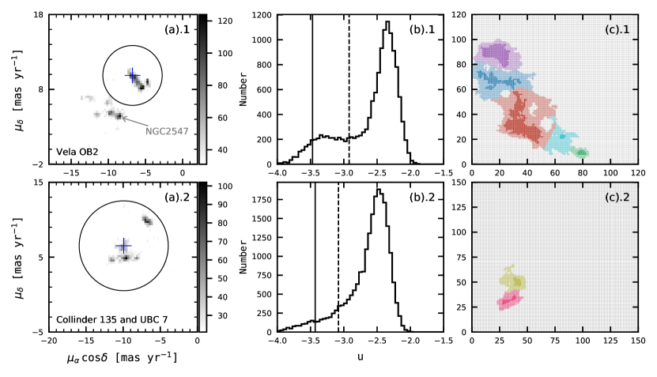
2.2 فصل البنى الهرمية
أثبتت StarGO11 1 https://github.com/zyuan-astro/StarGO-OC (Yuan et al., 2018) نجاحها في تحديد عضوية العناقيد المفتوحة (Tang et al., 2019; Pang et al., 2020, 2021) والتيارات النجمية الأكثر انتشارا (مثلا Yuan et al., 2020a, b). وتستند الطريقة إلى الخريطة ذاتية التنظيم (SOM)، التي تنتمي إلى مجال التعلم غير الخاضع للإشراف. ويمكن لـSOM إسقاط بيانات عالية الأبعاد على شبكة عصبية ثنائية الأبعاد مع الحفاظ على البنى الطوبولوجية لبيانات الإدخال.
نطبق StarGO على عينة النجوم المختارة بعد تطبيق الاقتطاع الدائري في فضاء الحركة الخاصة (انظر الشكل 1 (a).1 و(a).2). ويتخذ فضاء الإدخال إلى الشبكة العصبية الصورة (، ، ). وتشكل نجوم العناقيد زيادات كثافة في فضاء الإدخال، وترتبط بمجموعات من العصبونات يمكن أن تحددها StarGO. نعتمد شبكات من 120120 و150150 عصبونا (بحسب عدد النجوم المتبقية بعد تطبيق اختيار الحركة الخاصة) لـVela OB2 وزوج العناقيد، على التوالي (انظر الشكل 1 (c).1 و(c).2). ويُسند إلى كل عصبون في البداية متجه وزن عشوائي 5D، له الأبعاد نفسها كفضاء الإدخال. وأثناء عملية التعلم، يُحدّث متجه الوزن لكل عصبون ليصبح أقرب إلى متجه الإدخال لنجم معين. وتكتمل دورة تدريب واحدة بعد تدريب العصبونات بكل نجم من كامل العينة. وتُكرر هذه العملية 400 مرة عندما تتقارب متجهات الأوزان.
بعد اكتمال التعلم الذاتي الإشراف، يعرّف الفرق في متجهات الأوزان بين العصبونات المتجاورة بأنه مصفوفة . ويُعرض توزيع قيم العناصر في مصفوفة في الشكل 1 (b).1 و(b).2. ويتكون الذيل على الجانب الأيسر من التوزيع من عصبونات ذات قيم منخفضة نسبيا، وهو ما يقابل أعضاء العناقيد المتجمعة في فضاء الإدخال. وتتمثل طريقة التحديد أولا في ربط كل نجم من كامل العينة بالعصبون الذي له أقرب متجه وزن إلى متجه إدخاله. وبعد ذلك نختار العصبونات ذات دون قيمة عتبة تشير إليها الخطوط المتقطعة في الشكل 1 (b).1 و(b).2، مكونة الرقع الملونة الشفافة في اللوحتين (c).1 و(c).2. وتُختار قيمة العتبة هذه، ، لضمان معدل تلوث مقدر قدره 5% بين الأعضاء المحددين. وبصورة خاصة، يُقدر معدل التلوث من جمهرة قرص المجرة الملساء باستخدام فهرس Gaia EDR 3 المحاكى (Rybizki et al., 2020). ويطبق على نجوم الفهرس المحاكى، في حجم السماء نفسه، اختيار حركة خاصة مماثل لذلك الموصوف في القسم 2.1. ثم تُلحق كل نجمة محاكاة بالشبكة العصبية 2D المدربة. وبعد ذلك نعد النجوم المحاكاة المرتبطة بالرقع المختارة. وبافتراض أن جمهرة درب التبانة لها الخصائص نفسها كما في الفهرس المحاكى، يمكن تقدير معدل تلوث كل مجموعة محددة (انظر التفاصيل في Pang et al., 2020, 2021) . نعتمد عتبة هذه لمعدل التلوث 5%، ونحصل على مجموعات العصبونات المعروضة بألوان شفافة في الشكل 1 (c).1 و(c).2.
نحصل على رقعة شفافة كبيرة واحدة في كل من التشغيلين في المناطق المستهدفة، وتمثل بنية المستوى الأعلى في Vela OB2 (اللوحة (c).1) وزوج العناقيد (اللوحة (c).2). ولكشف البنى الفرعية الهرمية الداخلية، نخفض قيمة عتبة أكثر حتى يبلغ معدل التلوث 1%. وتُدل قيم المقابلة بالخطوط المصمتة في الشكل 1 (b).1 و(b).2، وتعرض الرقع الناتجة بألوان مصمتة في الشكل 1 (c).1 و(c).2. وتمثل هذه الرقع المناطق اللبية لكل عنقود. ثم نربط العصبونات في الأطراف الشفافة بهذه النوى بحساب أصغر فرق في متجهات الأوزان بين عصبون معين وكل رقعة لبية. فعلى سبيل المثال، تُلوّن العصبونات التي تمتلك أصغر فروق مع الرقعة اللبية الحمراء، مقارنة بالرقع اللبية الأربع الأخرى، باللون الأحمر. وبهذه الطريقة، تُسند كل العصبونات في الحافة الشفافة إلى رقعة لبية، وتدل عليها ألوان شفافة مختلفة في اللوحتين (c).1 و(c).2. وفي المجموع، يحتوي Vela OB2 على خمسة عناقيد من المستوى الثاني (خمس رقع ملونة شفافة في الشكل 5 اللوحة (c).1)، ويتفتت زوج العناقيد إلى 2 بنيتين من المستوى الثاني تقابلان Collinder 135 وUBC 7 (الرقعتان الملونتان الشفافتان في الشكل 5 اللوحة (c).2). وهذه هي المرة الأولى التي يُحدد فيها زوج العناقيد Collinder 135 وUBC 7 في وقت واحد مع أدنى قدر من التدخل اليدوي. ولم تكشف الدراسات السابقة (Castro-Ginard et al., 2018) عن Collinder 135 باستخدام طريقة DBSCAN لأن البنية ممتدة مكانيا إلى حد كبير.
يعتمد تحديدنا للتعنقد الهرمي اعتمادا خالصا على معلومات فضاء الطور 5D من دون افتراض مسبق للعمر أو حجم العنقود أو عتبة الكثافة. ومن ثم يمكن تحديد التوزيع الممتد للأجيال الفتية والقديمة على حد سواء بصورة مستقلة، مما يتيح لنا استقصاء تقدم تشكل النجوم داخل المركب النجمي. ويستخلص التعنقد من المستوى الأعلى أولا على مقياس كبير، بحيث يشمل بنى فرعية مهمة. ثم نفتت بنى المستوى الأعلى إلى عناقيد فرعية. وتضمن هذه الطريقة من أعلى إلى أسفل أن تكون البنى الهرمية المحددة متماسكة حقا في المكان والحركة معا.
3 العضوية النجمية في البنى الهرمية
3.1 تنظيف العينة
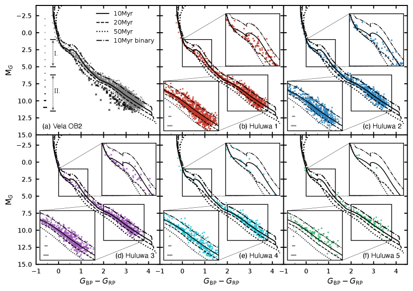
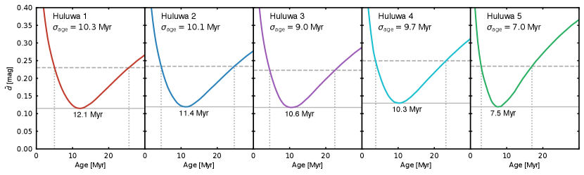
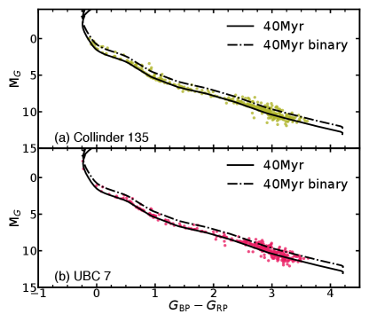
نبني مخططات اللون-القدر (CMDs) لمرشحي العضوية في العناقيد الخمسة من المستوى الثاني في Vela OB2 (الشكل 2)، ولـCollinder 135 وUBC 7 (الشكل 4). وتتبع نجوم بنية المستوى الأعلى في Vela OB2 مجتمعة (النقاط الرمادية في الشكل 2 اللوحة (a)) موضعا لتتابع رئيسي (MS). وتمتد تقديرات العمر السابقة لـVela OB2 من 10 Myr عبر ملاءمة الإيزوكرونات (Prisinzano et al., 2016; Cantat-Gaudin et al., 2019b) إلى 18–21 Myr عبر وفرة الليثيوم (Jeffries et al., 2017) . نرسم إيزوكرونات PARSEC لأعمار 10 Myr و20 Myr (المنحنيان الأسودان المصمت والمتقطع) بمعدنية شمسية و (Cantat-Gaudin et al., 2019b). لا يزال عدد كبير من النجوم في مرحلة PMS، بينما يقع عدد أقل في MS. وعدد ملحوظ من نجوم PMS العليا أقدم من 10 Myr، أي أكثر زرقة من إيزوكرون عمره 10 Myr مع MG في نطاق 2.0–5.0 mag (المنطقة I) في الشكل 2 (a))، وقد استبعدها Cantat-Gaudin et al. (2019b) لأنهم استبعدوا الجمهرة الأقدم من NGC 2547. وقد استُبعد NGC 2547 من تحليلنا باستخدام الاقتطاع الدائري للحركات الخاصة (انظر الشكل 1 (a).1). لذلك تنتمي نجوم PMS العليا الأقدم في عينتنا إلى مركب Vela OB2. وتتبع الحافة الزرقاء لـPMS العليا (المنطقة I) إيزوكرون 20 Myr. ونرسم فوقها تتابع ثنائيات لإيزوكرون 10 Myr بنسبة كتلة مساوية للواحد (منحنى متقطع-منقط). ومع أخذ النجوم الثنائية واللايقينات الضوئية في الحسبان، قد يبقى اتساع PMS في المنطقتين I وII دالا على انتشار عمري من رتبة مليون سنة في Vela OB2. وهذا الانتشار العمري شائع في عناقيد نجمية فتية أخرى (مثلا، NGC 3603، Beccari et al., 2010; Pang et al., 2013) بوصفه نتيجة لانتشار تشكل النجوم.
يقع عدد قليل من النجوم المرشحة أسفل موضع MS (M mag)، ويقابل عمرا أكبر من 50 Myr (المنحنى الأسود المنقط في الشكل 2 (a)). وتقع هذه النجوم في منطقة أكثر امتدادا من غالبية النجوم في Vela OB2. ومن المرجح أنها نجوم مجال. وبما أن العنقود يقع قريبا جدا من المستوى المجري، فإن تلوث نجوم المجال كبير، ويلزم تنظيف ضوئي إضافي (انظر القسم 2.3 في Pang et al., 2020). لذلك نعد النجوم الأكثر زرقة من إيزوكرون عمره 50 Myr والأخفت من M mag نجوما حقلية (رموز الصلبان السوداء في اللوحة (a) من الشكل 2)، ونستبعدها من التحليل أدناه.
نسمي العناقيد الخمسة من المستوى الثاني في Vela OB2 باسم Huluwa22 2 تعني Huluwa الإخوة القرع، وهي واحدة من أكثر الرسوم المتحركة شعبية في الصين في ثمانينيات القرن 1980. وتبدأ الأسطورة عندما تسقط القرعات تباعا من الساق نفسها وتتحول إلى سبعة صبية (https://en.wikipedia.org/wiki/Calabash_Brothers). وبصورة مشابهة، وُلدت العناقيد الخمسة تباعا من السحابة الجزيئية نفسها. 1–5، نسبة إلى سلسلة رسوم متحركة صينية، Huluwa (Calabash brothers). ومن Huluwa 1 إلى Huluwa 5، يتناقص عدد الأعضاء النجميين. وHuluwa 1 هي المجموعة الأكثر عددا، وهي عنقود Gamma Vel (Pozzo 1).
3.2 انتشار الأعمار في البنى الهرمية
نبني CMD لكل مجموعة في Vela OB2 بعد تنظيف التلوث الإضافي في اللوحات (b)–(f) من الشكل 2. ولتحديد فرق عمري محتمل بين العناقيد الخمسة، نعزز منطقتي PMS العليا (I) وPMS السفلى (II) في CMD (المشار إليهما بالأسهم في اللوحة (a)). الأولى هي المنطقة التي تندمج فيها PMS مع MS، والثانية منطقة يظهر فيها انتشار ملحوظ. ولم تُرسخ إيزوكرونات PMS جيدا في منطقة PMS السفلى (Kos et al., 2019). وأظهرت دراسات سابقة أن النجوم المتساوية العمر ذات معدلات التنامي المختلفة تولد انتشارا في اللمعان، ولا سيما عند الطرف الأقل كتلة من PMS (Tout et al., 1999; Baraffe et al., 2009; Kunitomo et al., 2017). وكما يتضح في الشكل 2 (b–f)، تنتشر النجوم في منطقة PMS السفلى حتى تتابع الثنائيات 10 Myr في جميع المجموعات. وبناء على الاعتبارات أعلاه، فإن تقدير العمر من منطقة PMS السفلى هذه سيعاني لايقينات كبيرة.
تملأ النجوم في مناطق PMS العليا في Huluwa 1–3 المنطقة بين إيزوكروني 10 و20 Myr (اللوحات b–d)، مما يشير إلى أن أعمار هذه البنى بين 10 Myr و20 Myr. وعلى النقيض من ذلك، فإن النجوم في منطقة PMS العليا في Huluwa 4 وHuluwa 5 أصغر في معظمها من إيزوكرون 10 Myr. ومع ذلك، يعاني هذان العنقودان من إحصاءات عددية منخفضة في هذه المنطقة.
ولتكميم انتشار العمر بين Huluwa 1–5 بصورة إضافية، نعتمد الطريقة المستخدمة في Liu and Pang (2019) وKos et al. (2019) ونعدلها. نعرف المسافة المتوسطة لكل عضو في العنقود إلى الإيزوكرون في CMD كما يلي
| (1) |
حيث إن و هما على التوالي فرق اللون وفرق القدر بين النجم العضو وأقرب نقطة له على الإيزوكرون باستخدام طريقة شجرة -D (Millman and Aivazis, 2011). ندرس مجموعة من الإيزوكرونات بمعدنية شمسية، (Cantat-Gaudin et al., 2019b)، وبعمر يمتد من 0 Myr إلى 30 Myr وبخطوة قدرها 0.1 Myr. ويعد الإيزوكرون ذو أصغر قيمة لـ (الخط الرمادي المصمت في الشكل 3) العمر الأفضل ملاءمة للعنقود. وتُظهر قيمة حدا أدنى محليا وتزداد نحو الأعمار الأكبر والأصغر (الشكل 3). وتؤخذ لايقينية العمر الملائم لكل مجموعة كنصف فرق العمر (بين الخطين الرماديين الرأسيين) عند بلوغ المسافة المتوسطة 1 (الخط الرمادي المتقطع) فوق الحد الأدنى .
لايقينية العمر قابلة للمقارنة بالعمر الأفضل ملاءمة، مما يؤكد وجود انتشار عمري كما في الشكل 2. وعلى الرغم من أن تحديد العمر المطلق للعناقيد الفتية باستخدام ملاءمة الإيزوكرونات قد تكون له لايقينية قدرها 10% (Kos et al., 2019)، فلا يزال بالإمكان تحديد انتشار عمري نسبي يبلغ بضع، وحتى Myr في Huluwa 1–5 في الشكل 3. وتجدر الإشارة إلى أن آثار ثنائية النجوم وتنامي PMS واللايقين الضوئي يمكن أيضا أن تضع النجوم فوق الإيزوكرون أو تحته وتساهم في المسافة المتوسطة. وبناء على بياناتنا الحالية، لا نستطيع فصل هذه الإسهامات الثلاثة. لذلك ينبغي التعامل مع الانتشار العمري المقدر من اللايقينية بوصفه حدا أعلى لانتشار العمر في كل مجموعة.
من Huluwa 1 إلى Huluwa 5، يصبح العمر أصغر وينخفض انتشار العمر. وقد تكون عملية تقدم في تشكل النجوم قد حدثت في Huluwa 1–5. العمر الأفضل ملاءمة لـHuluwa 1 هو 12.1 Myr مع انتشار قدره 10.3 Myr. وHuluwa 5 هو العنقود الأصغر عمرا، بعمر قدره 7.5 Myr وبأصغر انتشار عمري قدره 7 Myr. ويتوافق تقدير العمر هذا مع النتائج السابقة لـJeffries et al. (2017)، الذين اقترحوا عمرا قدره 18–21 Myr لـGamma Vel (Huluwa 1) بناء على تحليل وفرة الليثيوم، كما يتوافق مع العمل الحديث لـFranciosini et al. (2020)، الذين استخدموا نموذج نضوب الليثيوم بعمر 18 Myr مع تغطية بقع 20% وحققوا ملاءمة معقولة لـGamma Vel (Huluwa 1).
وبالنظر إلى انتشار العمر في كل مجموعة، نعتمد عمرا قدره 10 Myr لـHuluwa 1–5 في Vela OB2، ونحصل على كتلة كل نجم عضو من أقرب نقطة على الإيزوكرون عبر طريقة شجرة -D (Millman and Aivazis, 2011). وتضم المجموعة الأعلى كتلة، Huluwa 1، 723.5 M⊙. أما Huluwa 2 فهو ثاني أكثر العناقيد كتلة، بكتلة قدرها 467.4 M⊙. وتبلغ الكتلة الكلية للعناقيد 5 في Vela OB2 1805 M⊙، مع لايقينية قدرها 104 M⊙ عند أخذ عمر مختلف قدره 20 Myr في الاعتبار.
إن مواقع أعضاء زوج العناقيد Collinder 135 وUBC 7 في CMD (الشكل 4) متوافقة مع عمر قدره 40 Myr (Kovaleva et al., 2020). ويظهر تتابع ثنائي بوضوح في CMD لكل من Collinder 135 وUBC 7، وهو ضمن تتابع الثنائيات متساوية الكتلة (المنحنيات المتقطعة-المنقطة). ومع ذلك، لا يُرصد تتابع تلوث واضح. ولا نطبق تنظيفا إضافيا لهذين العنقودين. وباعتماد عمر قدره 40 Myr لكل عنقود من عنقودي الزوج، تبلغ الكتلة الكلية لزوج العناقيد 445.5 M⊙ (Collinder 135: 253.2 M⊙ وUBC 7: 192.3 M⊙).
3.3 المضاهاة المتقاطعة للعضوية
| Cluster | Age | memb. | |||||||||||
|---|---|---|---|---|---|---|---|---|---|---|---|---|---|
| (Myr) | (pc) | (M☉) | (mas yr-1) | (km s-1) | (number) | ||||||||
| (1) | (2) | (3) | (4) | (5) | (6) | (7) | (8) | (9) | (10) | (11) | (12) | (13) | (14) |
| Huluwa 1 | 12.1–22.4 | -46.3 | -348.6 | -46.1 | 14.6 | 13.1 | 724 | -6.38 | 9.33 | 0.62 | 1.010.10 | 1.34 | 1294 |
| (Huluwa 1A) | 12.1–22.4 | -44.2 | -342.6 | -45.7 | 10.8 | 10.6 | 381.2 | -6.55 | 9.72 | 0.460.03 | 0.390.03 | 0.35 | 675 |
| (Huluwa 1B) | 12.1–22.4 | -48.2 | -354.9 | -47.0 | 13.6 | 10.2 | 342.8 | -6.20 | 8.90 | 0.490.07 | 0.380.05 | 0.92 | 619 |
| Huluwa 2 | 11.4–21.5 | -45.4 | -391.2 | -63.2 | 15.3 | 11.3 | 467 | -5.55 | 8.22 | 0.81 | 0.660.08 | 2.35 | 743 |
| Huluwa 3 | 10.6–19.6 | -64.2 | -383.1 | -70.1 | 7.9 | 10.5 | 373 | -4.74 | 8.94 | 0.77 | 0.75 | 1.80 | 588 |
| Huluwa 4 | 10.3–20.0 | -64.6 | -335.4 | -12.3 | 14.8 | 8.3 | 181 | -7.15 | 10.02 | 0.68 | 0.50 | 347 | |
| Huluwa 5 | 7.5–14.5 | -95.4 | -341.7 | 12.8 | 4.7 | 5.7 | 61 | -7.01 | 10.81 | 0.49 | 0.47 | 102 | |
| Collinder 135 | 40 | -105.8 | -277.7 | -58.0 | 9.7 | 9.2 | 253 | -10.05 | 6.17 | 0.73 | 0.69 | 1.130.53 | 377 |
| UBC 7 | 40 | -98.0 | -252.6 | -63.7 | 7.6 | 8.4 | 192 | -9.77 | 7.00 | 0.46 | 0.51 | 1.36 | 336 |
Note. — تجدر الإشارة إلى أن Huluwa 1A و1B هما مكونان من Huluwa 1. و و هي المواضع الوسيطة للأعضاء في كل عنقود، في إحداثيات ديكارتية مركزية الشمس بعد تصحيح المسافة (القسم 5.1). و و هما نصفا قطر نصف الكتلة والمد لكل عنقود، على التوالي. ويُحسب نصف قطر المد باستخدام المعادلة 12 في Pinfield et al. (1998). والكمية هي الكتلة الكلية لكل عنقود نجمي. و و هما متوسطا الحركات الخاصة لكل مجموعة. أما و فهما تشتتا مركبتي R.A. وDecl. للحركات الخاصة. و هو تشتت السرعة الشعاعية بعد تصحيح النجوم الثنائية وتلوث نجوم المجال. ولا يتوافر الأخير لـHuluwa 4 و5 بسبب العدد الصغير من قياسات السرعة الشعاعية. وتُستحصل أخطاء تشتت السرعة باستخدام طريقة MCMC.
في المجموع، اختير 3074 عضوا في Vela OB2 بعد تنظيف CMD، و1294 عضوا لـHuluwa 1، و743 عضوا لـHuluwa 2، و588 عضوا لـHuluwa 3، و347 عضوا لـHuluwa 4، و102 عضوا لـHuluwa 5. ويحتوي Collinder 135 على 377 عضوا، وحددنا 336 عضوا لـUBC 7. وترد معلمات كل من هذه البنى في الجدول 1. ونوفر قائمة مفصلة بالأعضاء في جميع العناقيد في الجدول 2، مع المعلمات المستخلصة في هذه الدراسة.
تتفق قائمة أعضائنا اتفاقا جيدا مع قوائم الدراسات السابقة، لكنها توفر عينة أكمل لـVela OB2. وبالنسبة إلى أكبر مجموعة، Huluwa 1، زدنا عدد الأعضاء من 437 في Liu and Pang (2019) (ID:2394، والمعروفة أيضا باسم LP 2394) ومن 341 في Cantat-Gaudin et al. (2020) إلى 1294، حيث يتداخل 354 و325 عضوا مع الدراسة الحالية، على التوالي. ويوجد 139 عضوا في Huluwa 1 و27 عضوا في Huluwa 2 يتطابقون تقاطعيا مع الأعضاء المحددين في Jeffries et al. (2014).
ومن بين أعضاء زوج العناقيد، نقارن قائمة أعضائنا بقائمة Cantat-Gaudin et al. (2020)، حيث طابقت 232 نجمة في Collinder 135، و118 في UBC 7.
| Column | Unit | Description |
|---|---|---|
| Cluster Name | Name of the target cluster | |
| Gaia ID | Object ID in Gaia EDR 3 | |
| ra | degree | R.A. at J2016.0 from Gaia EDR 3 |
| er_RA | mas | Positional uncertainty in R.A. at J2016.0 from Gaia EDR 3 |
| dec | degree | Decl. at J2016.0 from Gaia EDR 3 |
| er_DEC | mas | Positional uncertainty in decl. at J2016.0 from Gaia EDR 3 |
| parallax | mas | Parallax from Gaia EDR 3 |
| er_parallax | mas | Uncertainty in the parallax |
| pmra | mas yr-1 | Proper motion with robust fit in from Gaia EDR 3 |
| er_pmra | mas yr-1 | Error of the proper motion with robust fit in |
| pmdec | mas yr-1 | Proper motion with robust fit in from Gaia EDR 3 |
| er_pmdec | mas yr-1 | Error of the proper motion with robust fit in |
| Gmag | mag | Magnitude in band from Gaia EDR 3 |
| BR | mag | Magnitude in band from Gaia EDR 3 |
| RP | mag | Magnitude in band from Gaia EDR 3 |
| Gaia_radial_velocity | km s-1 | Radial velocity from Gaia DR 2 |
| er_Gaia_radial_velocity | km s-1 | Error of radial velocity from Gaia EDR 3 |
| Jeffries_radial_velocity | km s-1 | Radial velocity from Gaia/ESO survey (Jeffries et al., 2014) |
| er_Jeffries_radial_velocity | km s-1 | Error of radial velocity from Gaia/ESO survey (Jeffries et al., 2014) |
| Mass | M⊙ | Stellar mass obtained in this study |
| X_obs | pc | Heliocentric Cartesian X coordinate computed via direct inverting Gaia EDR 3 parallax |
| Y_obs | pc | Heliocentric Cartesian Y coordinate computed via direct inverting Gaia EDR 3 parallax |
| Z_obs | pc | Heliocentric Cartesian Z coordinate computed via direct inverting Gaia EDR 3 parallax |
| X_cor | pc | Heliocentric Cartesian X coordinate after distance correction in this study |
| Y_cor | pc | Heliocentric Cartesian Y coordinate after distance correction in this study |
| Z_cor | pc | Heliocentric Cartesian Z coordinate after distance correction in this study |
| Dist_cor | pc | The corrected distance of individual member |
Note. — تتوافر نسخة كاملة قابلة للقراءة آليا من هذا الجدول على الإنترنت.
4 الخصائص الحركية للبنى الهرمية
4.1 توزيع الحركة الخاصة
إحدى سمات البنى الهرمية في المركب هي الاتساق الحركي بين المجموعات النجمية. وهذا الاتساق متوقع لأن جميع البنى الفرعية تشكلت من السحابة الجزيئية نفسها، وورثت الحركيات الداخلية للسحابة (انظر مثلا، Elmegreen et al., 2000). وتُعرض خرائط توزيع الحركة الخاصة والكنتورات لـHuluwa 1–5 وزوج العناقيد في اللوحتين (a) و(b) من الشكل 5. ويشغل كل عنقود منطقة مميزة لكنها متجاورة في مخطط متجه الحركة الخاصة، مما يشير إلى أن خصائصها الحركية مترابطة. ويظهر Huluwa 1 توزيعا ممتدا للحركة الخاصة. وتُرصد زيادتا كثافة داخل Huluwa 1 في خريطة كنتور الحركة الخاصة (انظر الشكل 5 (b)). أما توزيعا الحركة الخاصة لـCollinder 135 وUBC 7 فهما متجاوران لكنهما لا يزالان منفصلين بوضوح، وهو ما يدعم أصلا مشتركا لتشكل هذا الزوج العنقودي المتساوي العمر (Castro-Ginard et al., 2018).
نجحت دراسات سابقة في فصل Vela OB2 إلى مجموعات هرمية مختلفة. في اللوحة (c) من الشكل 5، نرسم فوق توزيع الحركة الخاصة موقع المجموعات 11 الموصوفة في Cantat-Gaudin et al. (2019b, CG19). وتتداخل Huluwa 1–5 مع 7 مجموعات من CG19. وتشمل Huluwa 1 المجموعتين A و B من Cantat-Gaudin et al. (2019b)، وهو ما يتوافق مع زيادة كثافة كنتور الحركة الخاصة في اللوحة (b). وتعد المجموعات I وJ وK من CG19 بنى أبعد (أكثر من 100 pc من Vela OB2) وليست مدرجة في تحليلنا. وبالإضافة إلى ذلك، ترتبط Huluwa 1–3 بالمجموعات 4 و2 و1 في Beccari et al. (2018). لاحظ أن 27 من الأعضاء في مكون Gamma Vel B (Huluwa 1) من Jeffries et al. (2014, الصلبان السوداء في منطقة النقاط الزرقاء في اللوحة (a)) لا ينتمون في الواقع إلى Gamma Vel (Huluwa 1). بل هم أعضاء في عنقود آخر Huluwa 2 (النقاط الزرقاء في اللوحة (a)).
نتبع مواقع الحركة الخاصة للمجموعتين A وB في Cantat-Gaudin et al. (2019b)، ونفصل Huluwa 1 إلى Huluwa 1A وHuluwa 1B من أجل التحليل الحركي الآتي، بخط مستقيم في اللوحة (c) من الشكل 5. وبالمقارنة مع الدراسات السابقة، فإن الأعضاء المتطابقين تقاطعيا في Huluwa 1 (Gamma Vel) مع Liu and Pang (2019, الماسات السوداء) لهم تغطية أكبر في Huluwa 1B من Cantat-Gaudin et al. (2020, الصلبان الخضراء الداكنة). ويشبه التوزيع المتجاور وتقارب الحركات الخاصة في Huluwa 1A وHuluwa 1B ترتيب زوج العناقيد Collinder 135 وUBC 7.
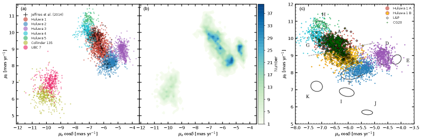
4.2 توزيعات السرعة الشعاعية
وجدت دراسات سابقة أن أكثر العناقيد كتلة، Huluwa 1 (Gamma Vel)، يتميز بجمهرتين نجميتين متساويتي العمر ومتمايزتين حركيا (Jeffries et al., 2014; Sacco et al., 2015; Franciosini et al., 2018)، واقتُرح أنهما تقابلان لبا مرتبطا وهالة متمددة (Jeffries et al., 2014)، أو أنهما ربما ولدتا بفعل لقاء سابق بين Gamma Vel والعنقود القريب NGC 2547 (Damiani et al., 2017). وفي الدراسات السابقة، تضمنت قائمة أعضاء Gamma Vel B (Huluwa 1B) أعضاء من Huluwa 2 (انظر الشكل 5 (a) الصلبان السوداء)؛ وقد يؤدي ذلك إلى مبالغة في تقدير تشتت السرعة المحسوب. لذلك نعيد بناء توزيع RV لـHuluwa 1 باستخدام قياسات RV من GES (الشكل 6 (a))، اعتمادا على الأعضاء المحددين في البحث الحالي. Huluwa 1A (17.1 km s-1؛ مدرج سماوي مظلل) متميز عن Huluwa 1B (18.2 km s-1؛ مدرج بلون السلمون مظلل)، مع توزيع RV بمتوسط RV مزاح بمقدار 1 km s-1، وهو ما يدعم الادعاءات السابقة بوجود مكونين حركيين متميزين في Huluwa 1.
توزيع RV في Huluwa 2 (المدرج الأزرق، باستخدام RV من GES) أكثر انتشارا عموما، وله قمة واحدة عند 21.0 km s-1. أما في Huluwa 3–5 (المدرج الأسود، باستخدام RV من Gaia DR2)، فملف RV أكثر امتدادا بكثير. لاحظ أن عدد قياسات RV في Huluwa 3–5 أصغر بكثير، وأن خطأ RV في Gaia DR2 أعلى بنحو عامل عشرة من نظيره في GES. وبالنسبة إلى زوج العناقيد، يملك Collinder 135 توزيعا للسرعة الشعاعية يكاد يكون مطابقا لتوزيع UBC 7 (الشكل 6 (b))، بمتوسط RV قدره 16.7 km s-1 و17.3 km s-1 على التوالي. ويشبه تشابه RV بين مكوني زوج العناقيد إلى حد كبير تشابه Huluwa 1A وHuluwa 1B. وفي كل من Vela OB2 وزوج العناقيد، نرصد نجوما ذات RVs تنحرف عن غالبية الجمهرة؛ ومن المرجح أنها أنظمة نجمية ثنائية. وبما أن معلومات RV غير مدرجة في تحديد العضوية لدينا، فإننا لا نستعيد هاتين البنيتين من المستوى الثالث في Huluwa 1 مباشرة من StarGo. لاحظ أن المجموعتين A و B حُددتا في نطاقات اختلاف منظري مختلفة في Cantat-Gaudin et al. (2019b).
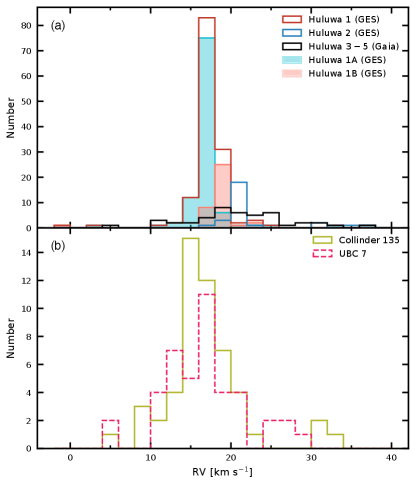
5 الفضاء 3D وتوزيع الكتلة
5.1 البنية المكانية
نبني التوزيع المكاني 3D لكل عنقود بتصحيح مواضع النجوم الفردية من أجل الاستطالة الزائفة المتولدة من أخطاء الاختلاف المنظري، عبر الطريقة البايزية الموصوفة في Carrera et al. (2019) وPang et al. (2020, 2021). نعتمد توزيعا غاوسيا لمسافات نجوم العنقود (وبالنسبة إلى البنى الممتدة، لا يوفر الملف الغاوسي إلا تقديرا تقريبيا) وملفا أسيا (Bailer-Jones, 2015) لمسافات نجوم المجال في القبلية. ونعتمد القيمة الوسيطة للمسافة المركزية العنقودية للنجوم الفردية بوصفها نصف قطر المقياس للتوزيع الغاوسي. واحتمال عضوية كل نجم هو 95%، مع أخذ معدل تلوث نجوم المجال 5% الناتج من تحديد العضوية في الاعتبار (انظر القسم 2.2). تقع جميع الأعضاء على مسافة pc. لذلك، فإن لايقينية المسافة المصححة للنجوم تبلغ 2–3 pc، وفقا للمحاكاة في Pang et al. (2021, انظر شكلهم 4).
في الشكل 7، اللوحات (a) إلى (c)، نعرض إسقاطات أعضاء Huluwa 1–5 في Vela OB2 وCollinder 135 وUBC 7، على المستويات و و، بعد تصحيح المسافة. ومن بين البنى الفرعية الهرمية في Vela OB2، يعد Huluwa 1 أكثر المجموعات كتلة (نقاط حمراء) ويمتد حتى 50 pc في اتجاهات و و. أما Huluwa 2 (نقاط زرقاء) فله امتداد قدره 60–70 pc ولا سيما على طول اتجاه . وHuluwa 3 (نقاط أرجوانية) أكثر تراصا من Huluwa 1 و2. ويمتلك Huluwa 4 (نقاط سماوية) شكلا مطاولا، يربط أكبر العناقيد، Huluwa 1، بأصغر عنقود، Huluwa 5 (نقاط خضراء).
ينفصل زوج العناقيد Collinder 135 وUBC 7 على طول اتجاه ، مع تراكيز منفصلة للنجوم. ولـCollinder 135 ذيل ممتد (طوله pc) على طول محور ، بينما يتجه ذيل UBC 7 على طول اتجاه ، ويبلغ طوله 40 pc. ويفصل بين مركزي العنقودين 25 pc فقط.
وعلى نحو مشابه لزوج العناقيد، يمكن تقسيم مكوني Huluwa 1، Huluwa 1A و1B، على طول اتجاه عند –360 pc. ولكل من Huluwa 1A (النقاط الحمراء في الشكل 7) وHuluwa 1B (الصلبان الصفراء) توزيع منتشر من دون أي تركيز مركزي واضح. ويفصل بين مركزي Huluwa 1A وHuluwa 1B (انظر الجدول 1) 13 pc فقط، وهو أصغر بكثير من القيمة السابقة 38 pc التي أبلغ عنها Franciosini et al. (2018). ويشير فصلهما المكاني الأقل من 30 pc (de la Fuente Marcos and de la Fuente Marcos, 2009a)، وتشابه توزيعات الحركة الخاصة والسرعة الشعاعية، وكتلتهما شبه المتطابقة، إلى أن Huluwa 1A وHuluwa 1B قد يكونان مرشحا لزوج عنقودين متساوي العمر، على غرار زوج العناقيد Collinder 135 وUBC 7.
يحاكي التوزيع المكاني لأعضاء Huluwa 1–5 بنية حلقية الشكل، تقع تقريبا على امتداد حافة قشرة IRAS Vela (Sahu, 1992; Cha and Sembach, 2000). وفي الشكل 8 نعرض المواضع 2D للأعضاء المحددين، فوق صورة IRIS (Miville-Deschênes and Lagache, 2005) التي تُظهر بنى الغاز في هذه المنطقة. وتبدو البنية الحلقية واضحة أيضا في الإسقاط 2D، على طول بنية الغاز الكثيفة التي قد تكون في الخلفية. اقترح Cantat-Gaudin et al. (2019b) أن تشكل النجوم في Vela OB2 حفزه انفجار مستعر أعظم داخل فجوة قشرة IRAS Vela. وربما كان المستعر الأعظم عضوا في جيل نجمي عمره 30 Myr (المجموعة III في Cantat-Gaudin et al., 2019a). ومع ذلك، لم يُكتشف حتى الآن بقايا المستعر الأعظم الافتراضي الذي أنشأ قشرة IRAS Vela.
في اللوحة (c)، نبرز مواضع نجوم PMS العليا الأعلى كتلة ذات مقادير MG بين 2.5 mag و6 mag والأقدم (الأكثر زرقة) من إيزوكرون عمره 10 Myr (دوائر سوداء في الشكل 7 (d)) بوصفها دوائر سوداء. وتقع في معظمها في الجزء السفلي من بنية القشرة. وباتباع التوزيع المكاني لهذه النجوم من PMS العليا (الدوائر السوداء)، نعرف حافة القشرة بخط مستقيم متقطع (اللوحة (c) في الشكل 7)، ونعرف النجوم في Huluwa 1–5 الواقعة فوق الخط المتقطع بأنها القشرة العليا، وتلك الواقعة أسفله بأنها القشرة السفلى. وتشكل جميع نجوم القشرة العليا (النقاط الملونة ذات حدود الدوائر البرتقالية في الشكل 8) بنية قشرية واضحة في الإسقاط 2D. وتبدو حافة القشرة (النجوم الصفراء في الشكل 8) متوافقة مع موقع حافة قشرة الغاز في الخلفية.
ومن خلال رسم النجوم في القشرة العليا في CMD في الشكل 7 (d) كدوائر برتقالية، نرى أنها أساسا نجوم PMS منخفضة الكتلة. ونجد نقصا في نجوم PMS العليا الأعلى كتلة ذات مقادير MG بين 2.5 mag و6 mag في منطقة القشرة العليا (اللوحة الداخلية المكبرة في الشكل 7 (d)). ويبدو أن معظم نجوم PMS الأقدم والأعلى كتلة هذه تقع في منطقة القشرة السفلى (الشكل 7 (c)). وعلى العكس، فإن النجوم في القشرة العليا أصغر عمرا وأقل كتلة في معظمها.
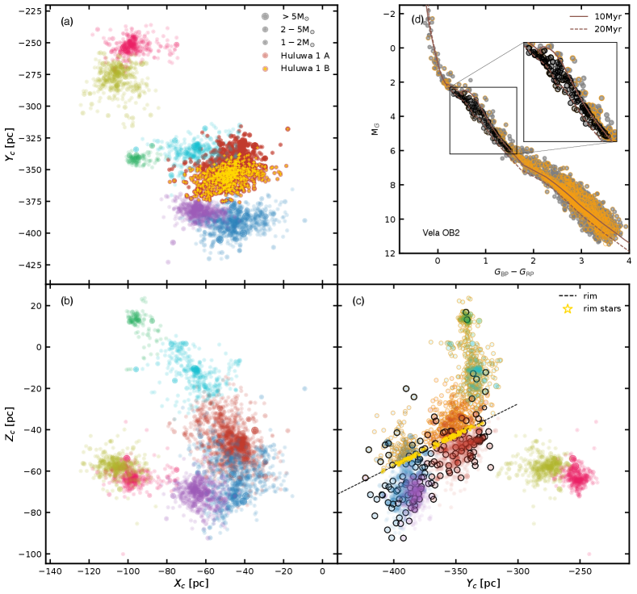
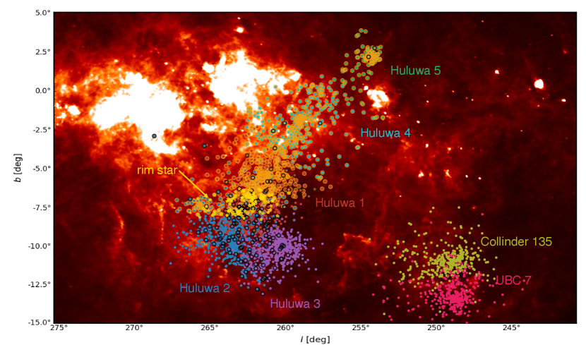
5.2 التطبق الكتلي على امتداد القشرة
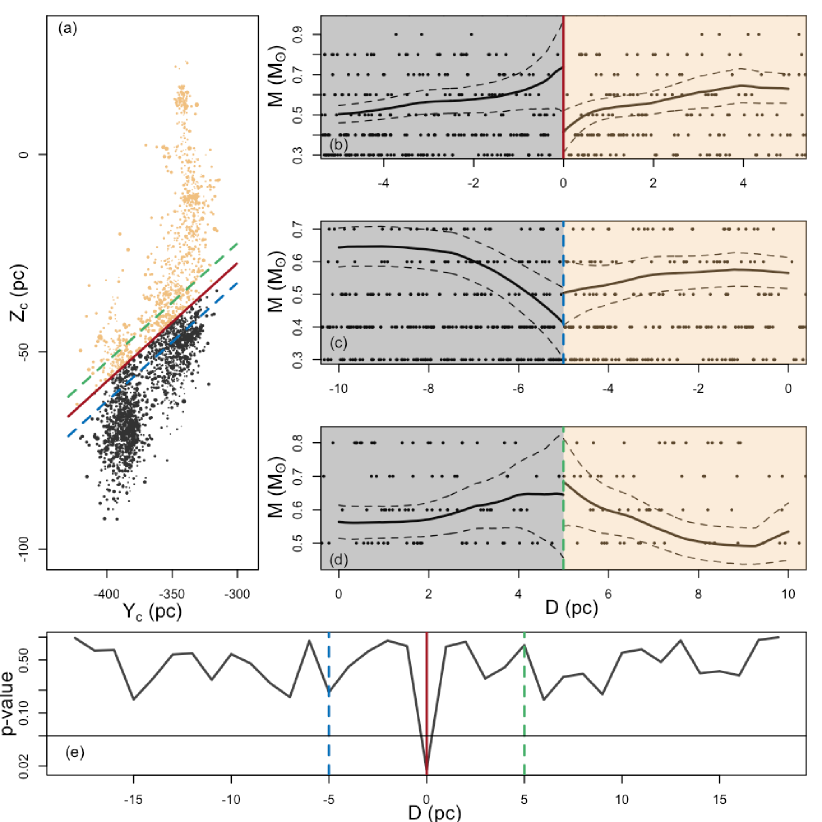
ولتكميم التطبق الكتلي عبر القشرة بصورة إضافية، نعتمد تقدير الانقطاع الانحداري (RD). وقد استُخدمت طريقة RD في عدد من المجالات مثل الطب والاقتصاد، ولم تطبق في الفيزياء الفلكية إلا حديثا (Pasquato and Matsiuk, 2019).
تُحفز مقاربة RD بالحاجة إلى تحديد الآثار السببية في الدراسات الرصدية (Imbens and Lemieux, 2008). فعلى سبيل المثال، الأثر السببي في هذه الحالة هو أن انفجار المستعر الأعظم يحفز التطبق الكتلي عبر حافة القشرة (الخط الأحمر المستقيم في الشكل 9 (a)). وإذا كان توزيع الكتلة المكاني منقطعا عند حافة القشرة، فإن هذا الأثر السببي محتمل جدا. وبدلا من ذلك، يعني التوزيع المتصل عند الحافة احتمالا منخفضا أن يكون انفجار المستعر الأعظم سبب توزيع الكتلة المرصود.
نعتمد حافة القشرة في الشكل 7 (الخط المتقطع في (c)؛ الخط الأحمر المصمت في الشكل 9 (a)). والنجوم الواقعة في الحافة العليا (النقاط البرتقالية في الشكل 7 (c) والشكل 9 (a)) تقع على امتداد قشرة غاز Vela IRAS (النقاط البرتقالية في الشكل 8). نفترض أن كتل النجوم على جانبي القشرة ينبغي أن تختلف فقط بسبب تأثير انفجار المستعر الأعظم. وننفذ انحدارا خطيا محليا لاعتماد الكتلة على مسافة النجم () إلى الحافة عند جانب القشرة العلوي () وجانبها السفلي () (المنحنى المصمت في (b)–(d) في الشكل 9). ومن مقارنة تقاطعات الانحدار الخطي المحلي على الجانبين، عندما لا تتداخل مستويات ثقة التقاطعات على كلا الجانبين، نستنتج أن الأثر السببي تفسير مرجح.
مسألة حاسمة في مقاربة RD هي تحديد عرض النطاق الأمثل للانحدار، وهو ما يحدد حد دالة النواة المدرجة في الانحدار الخطي المحلي. وقد تؤدي عروض النطاق الصغيرة إلى تباين كبير في المقدر بسبب قلة النقاط البيانية المدرجة، في حين قد تمحو عروض النطاق الكبيرة الانقطاع. نعتمد وصفة لتوليد عرض النطاق الأمثل بواسطة Imbens and Kalyanaraman (2012)، وهي منفذة في حزمة للغة البرمجة R (Dimmery, 2016). ونحصل على عرض نطاق أمثل يقابل pc.
يعرض الشكل 9 (b) نتائجنا بصورة بيانية. ووجد أن الكتلة النجمية عند الجانب السفلي من الحافة (؛ القشرة السفلى) أعلى بمقدار من الجانب العلوي (؛ القشرة العليا)، مع قيمة مرتبطة مقدارها . وتعد قيمة مقياسا لاحتمال أن تفسر هذه النتيجة بحدوث عشوائي. ويمكن تفسير قيمة أقل من 5% على أن الأثر السببي المقترح مرجح جدا. ويبقى الفرق المقدر في التقاطعات قويا حتى عندما نخفض عرض النطاق إلى النصف () أو نضاعفه (). وعندما يتغير موضع حافة القشرة (الخط الأحمر المصمت في الشكل 9 (a)) بنقلها إلى أعلى (الخط الأخضر المتقطع) أو إلى أسفل (الخط الأزرق المتقطع) بمقدار 5 pc على طول محور ، تصبح قيمة الناتجة أقل دلالة وتتداخل التقاطعات على جانبي الحافة (في الشكل 9 (c) و(d)). نغير موضع الحافة (بخطوات قدرها 1 pc) من الموضع المقترح (الخط الأحمر المصمت في الشكل 9 (a)) بمقدار 15 pc على طول اتجاه ، ونجد أن انقطاع الكتلة هو الأقوى عند موضع الحافة المقترح، حيث تبلغ قيمة حدا أدنى (الشكل 9 (e)).
وبما أن Huluwa 1–3 تقع أساسا في منطقة القشرة السفلى، بينما تقع Huluwa 4–5 في القشرة العليا، فإننا نبحث عن دليل في دالة الكتلة في كل مجموعة للتحقق المتقاطع من النتائج المستخلصة باستخدام طريقة RD. نرسم دالة الكتلة الحالية لـHuluwa 1–5 في الشكل 10. ويُقيد الميل في دالة الكتلة باستخدام ملاءمة خطية بأقل المربعات. وتتفق ميول دالة الكتلة في المجموعات الخمس عندما تؤخذ الأخطاء في الاعتبار. ويوجد نقص ظاهر في النجوم العالية الكتلة في Huluwa 4–5، وهو متوقع من نموذج Weidner et al. (2013) الذي تميل فيه العناقيد الأكبر كتلة إلى امتلاك مزيد من النجوم العالية الكتلة. والكتلة النجمية العظمى المرصودة هي 11 في Huluwa 1. وإذا اعتُمد عمر 20 Myr (حد أعلى) لـHuluwa 1، فإن الكتلة النجمية العظمى لنجم يبقى في مرحلة MS هي 12 ، في حين تكون النجوم الأعلى كتلة قد تطورت خارج MS (Banerjee et al., 2020). وهذا متوافق مع انتشار العمر في Huluwa 1–5. ومع ذلك، إذا كانت نجوم OB الضخمة قد طُردت من العنقود (Wang et al., 2019)، أو كانت النجوم الأكثر كتلة من 20 قد تطورت مباشرة إلى ثقوب سوداء (Banerjee et al., 2020)، فإن المرصود 11 لا يمثل الكتلة النجمية العظمى.
تحتوي Huluwa 1–3 على نجوم أكثر فوق 3 من Huluwa 4–5. وهذا يؤكد أن عددا أكبر من النجوم العالية الكتلة يوجد في القشرة السفلى حيث تقع Huluwa 1–3 مقارنة بالقشرة العليا التي تحتوي أساسا على Huluwa 4–5.
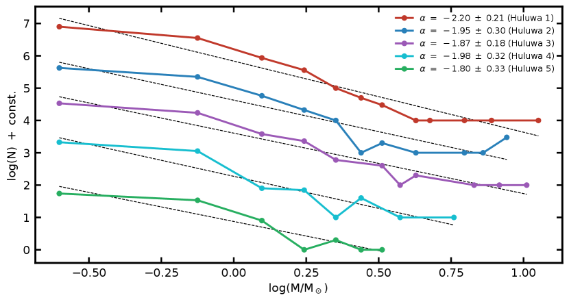
5.3 الفرز الكتلي
نظرا إلى أن النجوم العالية الكتلة مطبقة على امتداد حافة القشرة (الخطوط المتقطعة في اللوحة (c) من الشكل 7)، نعتمد طريقة الشجرة الممتدة الصغرى (MST) (انظر Allison et al., 2009, للتفاصيل) لتكميم درجة توزيع الكتلة في Vela OB2 ككل، وفي زوج العناقيد. وتُعتمد المواضع المكانية 3D للأعضاء (Pang et al., 2021) لتجنب اعتماد النتائج على زاوية الرؤية في 2D.
تقارن طريقة MST أصغر طول مسار بين الأعضاء الأعلى كتلة حتى المرتبة في تجمع نجمي مع أصغر طول مسار لـ أعضاء عشوائيين. وهذه الطريقة غير حساسة للنجوم الضخمة ذات الترتيب الممتد مثل «حلقة» أو «صليب» أو «تكتل»، ما لم يُسند وزن أعلى إلى الترتيب المهيمن (Olczak et al., 2011). وعلى الرغم من أن النجوم الضخمة مطبقة بفعل حافة القشرة (القسم 5.2) في Vela OB2، فلا يمكن الكشف عن هذا الترتيب الممتد باستخدام طريقة MST (المدرج الأسود في الشكل 11 (a)).
نطبق طريقة MST مرة أخرى على المجموعة الفردية Huluwa 1–5 (اللوحات (b)–(f) في الشكل 11). ونجد فرزا كتليا حتى 1 M☉ في المجموعة الأكثر تراصا والأدنى كتلة، Huluwa 5. ولا تُظهر المجموعات الأخرى الأعلى كتلة Huluwa 1–3 دليلا واضحا على الفرز الكتلي. ودرجة الفرز الكتلي في Huluwa 4 وCollinder 135 وUBC 7 هامشية.
يمكن أن يكون الفرز الكتلي في عنقود نجمي بدئيا أو ديناميكيا. ويحدث الفرز الكتلي الديناميكي نتيجة تقاسم طاقات النجوم أثناء اللقاءات ثنائية الجسم. ومقياس زمن الفرز الكتلي الديناميكي يتناسب مع زمن الاسترخاء، الذي يعتمد بدوره على عدد النجوم ونصف قطر نصف الكتلة والكتلة الكلية للعنقود. لذلك تمتلك أصغر مجموعة، Huluwa 5، أقصر مقياس زمني للاسترخاء وهو 3.8 Myr، محسوبا باستخدام المعادلة (7.108) في Binney and Tremaine (2008, باعتماد نصف قطر نصف الكتلة والكتلة الكلية وعدد الأعضاء من الجدول 1). وقد يكون العمر 10 Myr قد أتاح فعلا حدوث فرز ديناميكي في Huluwa 5. وحتى إن كان الفرز البدئي حاضرا في هذه المجموعات في أزمنة مبكرة، فإن التفاعلات الثنائية العنيفة في المركز التي تطرد النجوم الضخمة، أو التمدد الكبير، يمكن أن تمحو كلها البصمات المرصودة للفرز الكتلي البدئي.
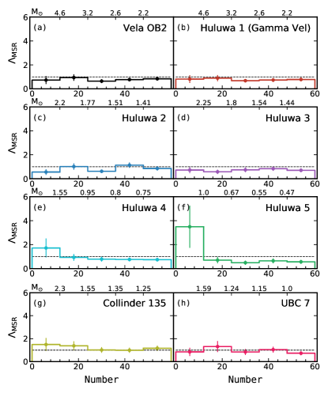
6 الحالة الديناميكية
6.1 التمدد في البنى الهرمية
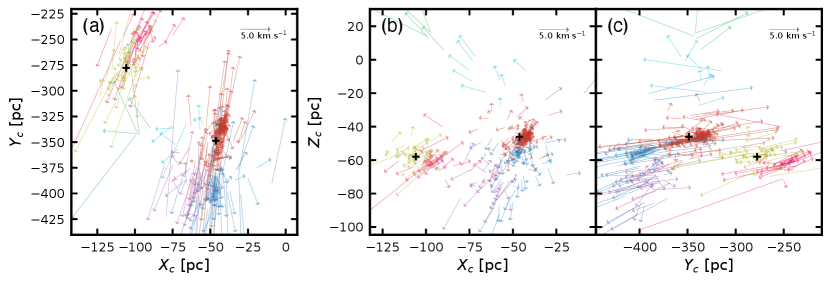
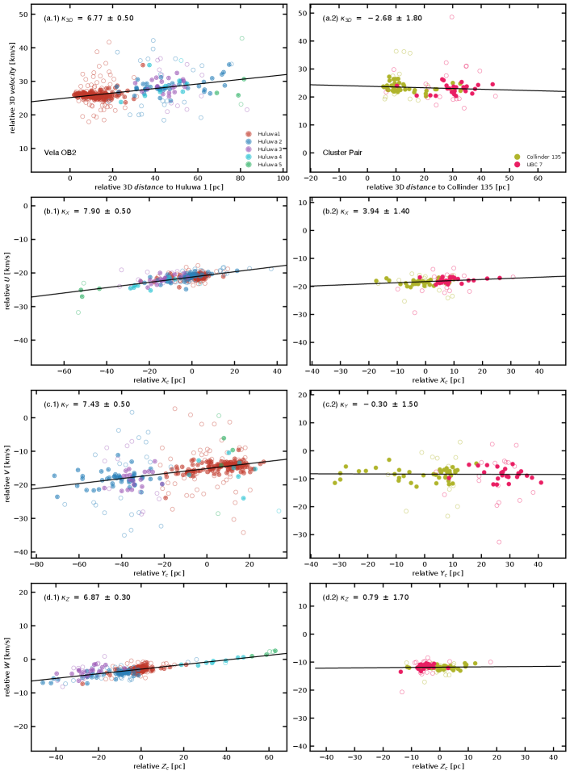
أبلغ Cantat-Gaudin et al. (2019a) عن تمدد ملحوظ داخل مركب Vela OB (المجموعة VII في بحثهم، وتقابل Huluwa 1–5 في الدراسة الحالية). واقترح أن معدل تمدد Vela OB2 هو الأعلى في منطقة Vela-Puppis (Cantat-Gaudin et al., 2019a). كما يُرصد التمدد أيضا في العناقيد الفردية المكونة لـVela OB2؛ فعلى سبيل المثال، كشف Franciosini et al. (2018) وArmstrong et al. (2020) تمددا في الجمهرة B من Gamma Velorum (Huluwa 1B).
نستقصي التمدد بصورة إضافية في فضاء السرعة 3D لكل من Vela OB2 وزوج العناقيد. وتُسقط متجهات السرعة 3D للنجوم الأعضاء على المستويات و و في اللوحات (a)–(c) من الأشكال 12. نحصل على RVs من Jeffries et al. (2014) للأعضاء في Huluwa 1 وHuluwa 2. أما RVs للنجوم المتبقية فتُستخرج من Gaia DR 2. وتكون متجهات السرعة للنجوم في Huluwa 1–5 بالنسبة إلى الحركة المتوسطة لـHuluwa 1، km s-1 في إحداثيات ديكارتية مركزية الشمس. وفي زوج العناقيد، تكون السرعات بالنسبة إلى الحركة المتوسطة لـCollinder 135، km s-1. وتوجد علامة واضحة على التمدد في Huluwa 1–5، إذ تُرى العناقيد الهرمية وهي تبتعد عن المجموعة الأكبر كتلة (Huluwa 1). كما يُرصد التمدد في زوج العناقيد للمرة الأولى، مع تحرك الأعضاء مبتعدين عن Collinder 135.
ولتكميم التمدد، نعرض السرعة النسبية 3D () لهذه النجوم مقابل المسافة النسبية إلى مركز Huluwa 1 (اللوحات اليسرى) أو إلى مركز Collinder 135 (اللوحات اليمنى) على طول المحاور () في الشكل 13. وتدل علاقة موجبة/سالبة على التمدد/الانكماش، وفقا لنموذج التمدد الخطي لـWright and Mamajek (2018). وبخلاف الدراسات السابقة التي تستخدم جميع الأعضاء المحددين لاستكشاف بصمة التمدد، نختار هنا في هذه الدراسة النجوم ذات قيمة السرعة 3D الواقعة بين المئينين 14 و86 في كل صندوق مسافة (دوائر ملونة مصمتة) لملاءمة علاقة خطية، وذلك لتجنب تأثير المرشحين الثنائيين. ونرصد علاقة موجبة بين السرعات والمواضع النسبية، مع معدل تمدد 1D قدره يتراوح بين km و km في Vela OB2، وهو الأكبر على طول محور والأصغر على طول محور . وهذه القيمة أكثر وضوحا من معدل التمدد في منطقة Scorpius-Centaurus OB2 ذات العمر 10 Myr (في المتوسط km ، Wright and Mamajek, 2018) وفي مركب Orion ذي العمر 6–9 Myr (في المتوسط km ، Swiggum et al., 2021). ونجد معدلات تمدد أعلى من تلك التي استخلصها Cantat-Gaudin et al. (2019b)، لكنها متوافقة ضمن لايقيناتهم. أما معدل التمدد 1D في زوج العناقيد فأصغر بكثير. بل إن معدل التمدد 3D يدل على انكماش، بقيمة سالبة لـ. ويكون التمدد أوضح ما يكون على طول اتجاه ، بقيمة km . وقد يكون هذا التمدد غير المتناحي في Vela OB2 وزوج العناقيد نتيجة للتغذية الراجعة النجمية المتغيرة مكانيا (Fujii et al., 2021a, b).
وبالمقارنة مع التمدد في عنقود فتي بعمر مشابه (NGC 2232؛ انظر Pang et al., 2020)، فإن التمدد في Vela OB2 أكثر وضوحا، ويمكن مقارنته بتمدد العناقيد المتفككة ذات الذيول المدية (مثلا، Coma Berenices، Tang et al., 2019; Pang et al., 2021). ولا تعتمد درجة التمدد التي يمر بها عنقود ما على سرعة تبديد الغاز الأمومي فقط (اندفاعي مقابل أديباتي)، بل تعتمد أيضا على SFE (Baumgardt and Kroupa, 2007; Dinnbier and Kroupa, 2020a, b). ويلزم أن تكون SFE لا تقل عن 33% لكي يبلغ العنقود المتبقي الاتزان مرة أخرى بعد حدوث طرد غازي اندفاعي (Baumgardt and Kroupa, 2007). وقد يشير معدل التمدد العالي في Vela OB2 ليس فقط إلى إزالة سريعة للغاز، بل أيضا إلى SFE أدنى من .
6.2 تشتتات السرعة
لتحديد ما إذا كانت هذه البنى الهرمية ستظل مرتبطة تثاقليا بعد هذا التمدد الواضح، نحسب تشتت RVs وPMs لكل عنقود، لتكميم حالاتها الديناميكية. نتبع الإجراء الموصوف في Pang et al. (2021)، مع افتراض أن دالة الاحتمال لتوزيع RV يمكن نمذجتها بمكونين غاوسيين (أعضاء العنقود ونجوم المجال؛ المعادلتان 1 و 8 في Cottaar et al., 2012)، مع أخذ آثار اتساع الثنائيات ولايقينات القياس في الاعتبار. ويتبع توزيع PM دالة احتمال مشابهة جدا (المعادلات 1–3 في Pang et al., 2018) لتوزيع RV، باستثناء تصحيح الثنائيات. وبالنسبة إلى Huluwa 1–2 (بما في ذلك Huluwa 1A و1B)، نستخدم فقط RVs من GES في الحساب، بينما نستخدم Gaia DR 2 للمجموعات الأخرى. ونظرا إلى العدد الصغير نسبيا من قياسات RV في Huluwa 4 و5، لا نحسب تشتت RV لهذين العنقودين. ونطبق طريقة سلسلة ماركوف مونت كارلو (MCMC) للحصول على القيم الأفضل ملاءمة ولايقيناتها المقابلة. وتعرض التشتتات النهائية لـPMs وRVs في الجدول 1.
يميل تشتت توزيع RV إلى أن يكون أكبر من تشتت PMs. وعلى الرغم من أن التمدد العام بعد طرد الغاز قد يولد لاتناحي سرعة (Baumgardt and Kroupa, 2007) في Huluwa 1–3 وزوج العناقيد، فإن هذه التشتتات المختلفة نشأت على الأرجح من لايقينات أصغر في قياسات PM مقارنة بلايقينات RVs. ويلزم مطيافية أعلى دقة لتبرير هذا الاتجاه.
استنادا إلى تشتت السرعة، نقدر النسبة الفيريالية (النسبة بين الطاقة الحركية الكلية والطاقة التثاقلية الكلية) لـHuluwa 1–3، ولزوج العناقيد. والنسبة الفيريالية الناتجة أكبر من 10 (حيث تقابل قيمة 0.5 نظاما فيرياليا). ويتطلب ذلك كتلة إضافية لا تقل عن 20 مرة للاحتفاظ بالنجم المتمدد. وحتى عدم اكتمال الرصد لا يستطيع إخفاء مثل هذا المقدار الكبير من الكتلة. فعادة ما يمثل عدم الاكتمال بضعة في المئة من كتلة العنقود (Tang et al., 2019). وهذا غير مفاجئ، إذ من المعروف أن كثيرا من تجمعات OB فوق فيريالية، بنسب فيريالية تتراوح من 10 إلى 1000 (Mel’nik and Dambis, 2017; Wright, 2020). ولأكثر من نصف المجموعات أنصاف أقطار نصف كتلة أكبر من أنصاف أقطار المد (الجدول 1، المعادلة 12 في Pinfield et al., 1998)، مما يؤكد بصورة إضافية حالاتها المتفككة.
نقيس أيضا تشتت السرعة للمكونين اللذين يشكلان Huluwa 1 (أي Huluwa 1A و1B). ويمتلك Huluwa 1B تشتت سرعة أعلى بنحو ثلاثة أضعاف من Huluwa 1A. وتبلغ النسبة الفيريالية 3 لـHuluwa 1A، و9 لـHuluwa 1B. ويسبب خطأ التشتت لايقينية قدرها 10% في النسبة الفيريالية. ونظرا إلى أن 50% من كتلته غير مرتبطة بالفعل (نصف قطر نصف الكتلة مطابق لنصف قطر المد؛ انظر الجدول 1)، يبدو Huluwa 1A في مرحلة مبكرة من التفكك، بينما Huluwa 1B (نصف قطر نصف الكتلة أكبر من نصف قطر المد بنسبة 30%) هو فعلا في مرحلة متقدمة من التفكك. وبخلاف الدراسات السابقة (Jeffries et al., 2014; Franciosini et al., 2018; Armstrong et al., 2020)، نجد أن Huluwa 1A قد لا يكون لبا مرتبطا. فالعنقود Huluwa 1 بأكمله فوق فيريالي، على الرغم من أن Huluwa 1A يتشتت على الأرجح بمعدل أبطأ من Huluwa 1B. ويؤكد تشتت السرعة والنسبة الفيريالية حالة التشتت في بنى Vela OB2 وزوج العناقيد، وقد يكون سببها طردا اندفاعيا للغاز مع SFE أدنى بكثير من 33% (Baumgardt and Kroupa, 2007; Dinnbier and Kroupa, 2020a, b).
7 تاريخ تشكل النجوم في Vela OB2: سيناريو الإخماد بالمستعر الأعظم
يمكن أن تتشكل البنى الهرمية في المركبات عبر قناتين. القناة الأولى هادئة وتدريجية، وتحدث عبر انتشار تشكل النجوم (Elmegreen et al., 2000; Kerr et al., 2021). فقد أثارت التغذية الراجعة النجمية للجيل الأول من النجوم اضطرابا في السحابة الجزيئية المحيطة وأنتجت تقلبات كثافة تدفع السحابة إلى الانهيار وتشكيل النجوم (Mac Low and Klessen, 2004; Fujii et al., 2021b). وغالبا ما يحدث تشكل النجوم المدفوع بالاضطراب هذا على طول بنى خيطية. أما قناة التشكل الثانية فهي عنيفة، إذ تضغط صدمات المستعر الأعظم الغاز وتولد زيادات كثافة. وغالبا ما يحدث تشكل النجوم وفق هذا النمط على امتداد حافة قشرة حول المستعر الأعظم (Kounkel, 2020).
نقترح سيناريو بديلا تكون فيه أعمار النجوم وترتيبها المكاني في Vela OB2 (Huluwa 1–5) نتيجة لتشكل نجمي تعاقبي. ويلعب المستعر الأعظم داخل قشرة Vela IRAS (Cha and Sembach, 2000) دورا تدميريا في إخماد تشكل النجوم (Krause et al., 2016; Wang et al., 2020). وربما حفز تشكل الجيل ذي العمر 20-Myr في Huluwa 1–3 التفاعل بين التغذية الراجعة النجمية من عناقيد محيطة أقدم غذت مناطق HII بدفع الغاز نحو الأطراف (Fujii et al., 2021a)، مثل Collinder 135/UBC 7.
بعد نحو 3 Myr، أنتجت النجوم الضخمة في Huluwa 1–3 تغذية راجعة نجمية تدريجيا ودفعت الغاز بعيدا عن العناقيد المركزية وأثارت اضطرابا في السحابة الجزيئية. وولد ذلك تقلبات كثافة محلية على طول البنى الخيطية (Mac Low and Klessen, 2004; Fujii et al., 2021a) وأنتج Huluwa 4–5. وفي الوقت نفسه، بدأت الجمهرة النجمية لـHuluwa 1–3 تتمدد بعد طور طرد الغاز؛ وتقع غالبية أعضائها الآن في المنطقة السفلى من القشرة. وعندما كانت Huluwa 4–5 تتشكل، أخمد انفجار مستعر أعظم (قد يكون عضوا في جيل نجمي عمره 30 Myr (الجمهرة III في Cantat-Gaudin et al., 2019a)) تشكل النجوم باستنزاف الغاز بكفاءة في منطقة القشرة العليا، وهي أساسا موقع Huluwa 4–5. لذلك توقفت معظم النجوم الأولية منخفضة الكتلة في هذه المنطقة عن تنامي الغاز، وفشلت في النمو إلى نجوم ضخمة، إذ تتطلب هذه الأخيرة زمنا أطول للتنامي من نظيراتها الأقل كتلة (Walker et al., 2021). وقد سرع هذا الإزالة العنيفة للغاز بدرجة كبيرة عملية تفكك Huluwa 1–5.
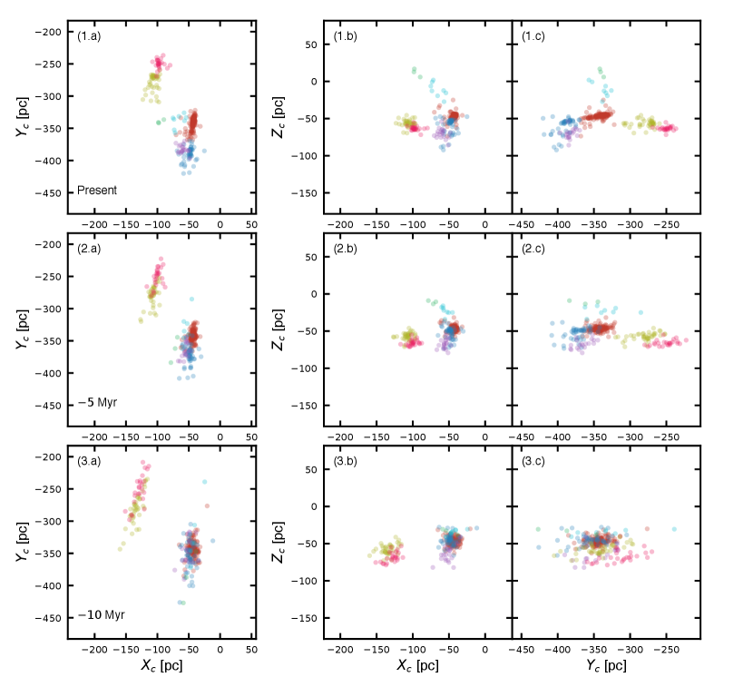
ولاستقصاء سيناريو تشكل النجوم التعاقبي والإخماد بالمستعر الأعظم بصورة إضافية، نعود بموضع النجوم الأعضاء إلى الماضي استنادا إلى مواضعها الحالية وسرعاتها 3D (انظر الشكل 14، مع افتراض حركة خطية للأعضاء، Wright and Mamajek, 2018). ولا تُستخدم في هذا الحساب إلا الدوائر الملونة المصمتة في الشكل 13. إذا كانت Huluwa 1–5 قد تشكلت من غاز ضغطته القشرة المتمددة بفعل جبهة الصدمة للمستعر الأعظم الافتراضي، فينبغي لجميع النجوم أن تعود إلى المنطقة المركزية من الفجوة داخل قشرة Vela IRAS (Kounkel, 2020). وعلى النقيض، إذا كانت نجوم Huluwa 4–5 قد تشكلت من زيادات كثافة مدفوعة بالاضطراب، فستتبع الخيوط وتعود إلى المصدر الذي غذى الاضطراب (Huluwa 1–3). وكما يتضح من الشكل 14، انكمشت Huluwa 4–5 ذات الشكل الشبيه بالخيط إلى فضاء صغير قريب من Huluwa 1 خلال آخر 10 Myr، مثل العنقودين الآخرين Huluwa 2–3. يدعم هذا الدليل فرضية حدوث تشكل نجمي تعاقبي في Vela OB2. فقد حفزت التغذية الراجعة النجمية للمجموعة الأكبر كتلة Huluwa 1–3 اضطرابا وشكلت العناقيد الأقل كتلة Huluwa 4–5.
ومع ذلك، وبالنظر إلى لايقين كل من موضع بقايا المستعر الأعظم غير المكتشفة ومسافتها، يقدم السيناريو المقترح قناة بديلة لتشكل Vela OB2. ولا نستطيع، استنادا إلى التحليل الحالي، استبعاد سيناريو تحفيز المستعر الأعظم لتشكل النجوم (Cantat-Gaudin et al., 2019b)، أو كثافة الغاز غير المنتظمة. وستساعد أرصاد إضافية لاكتشاف المستعر الأعظم وفرض قيود رصدية على مسافته وموضعه بالتأكيد في تحديد تاريخ تشكل البنى النجمية في هذه المنطقة.
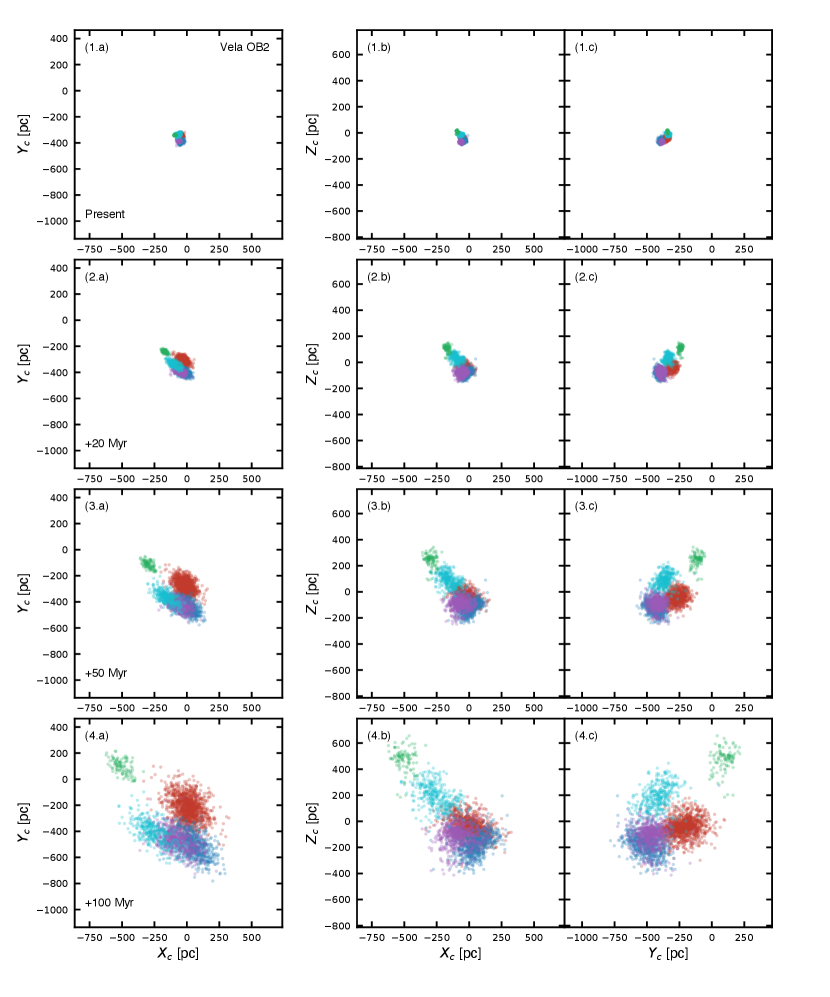
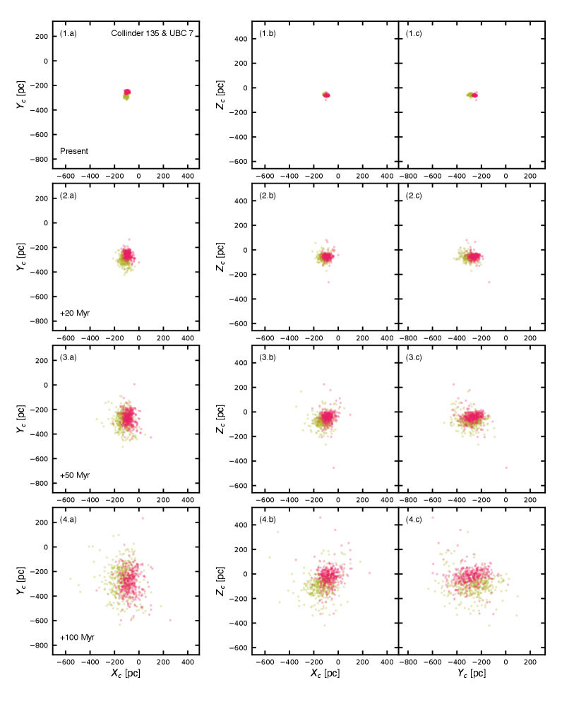
8 تنبؤات مستقبلية باستخدام محاكاة ذات أجسام
لدراسة المصائر الديناميكية لـVela OB2 وزوج العناقيد Collinder 135 وUBC 7، نجري محاكاة ذات أجسام باستخدام الشفرة NBODY6++GPU (Wang et al., 2015, 2016). ونهدف إلى استقصاء التفاعل المتبادل بين العناقيد Huluwa 1–5، وبين Collinder 135 وUBC 7، وتحديد ما إذا كانت ستندمج في النهاية لتصبح بنية كبيرة واحدة بفعل التفاعلات التثاقلية بين العناقيد الفرعية كما تقترح الأدبيات (Goodwin and Whitworth, 2004; Allison et al., 2009; Smith et al., 2011; Farias et al., 2018). نستخدم الأعضاء المرصودين لكل مجموعة مع ترتيبهم المكاني 3D بعد تصحيح المسافة (القسم 5.1) كمواضع ابتدائية. ولإسناد سرعة 3D فردية لكل نجم، نستخدم PMs وRVs من Gaia EDR3، وRVs من GES. ومع ذلك، لا يملك سوى جزء صغير من الأعضاء قياسات RV.
ولتصحيح نقص RVs، نفترض أن توزيعات RV للأعضاء في كل مجموعة غاوسية، بقيمة متوسطة مستخلصة من القيمة المتوسطة المرصودة وتشتت يستند إلى PMs من Gaia EDR3 كقيمة مرجعية. ونقيم نماذج بثلاثة تشتتات مختلفة لـRV. أولا، ندرس الحالة التي يكون فيها تشتت RV مطابقا لتشتت PMs، تحت افتراض الحركة المتناحية. ثم ندرس نماذج ذات تشتت سرعة يساوي نصف القيمة المتناحية المشتقة من توزيع PM أو ضعفها. وتُسند RV لكل نجم عشوائيا لكل من توزيعات RV الثلاثة المعتمدة. وفي محاكياتنا نهمل التطور النجمي والثنائيات النجمية والأثر المدي من درب التبانة الذي سيسرع عملية تفكك العناقيد. كما نفترض أن كل التجمعات النجمية قد أفرغت من محتواها الغازي؛ لذلك لا ندرج أي غاز متبق في المحاكاة.
تُشغل المحاكاة من الزمن الحالي إلى المستقبل 100 Myr. وعلى الرغم من غياب المد المجري، يواصل كل من Huluwa 1–5 وزوج العناقيد التمدد وينتهيان إلى بنية أكثر انتشارا بكثير وغير مرتبطة في النهاية، بغض النظر عن اختيار تشتت RV المعتمد (الشكلان 15 و 16). ونجد أن السرعات النسبية بين Huluwa 1–5، أو بين Collinder 135 وUBC 7، أعلى من تشتتاتها الداخلية في السرعة، بحيث لا توجد فرصة لأن تشكل نظاما مندمجا بعد التفاعلات التثاقلية (Gavagnin et al., 2016). كما يمنع هذا التمدد الملحوظ أي مجموعات في Huluwa 1–5 (بما في ذلك Huluwa 1A وHuluwa 1B) من التفاعل لتصبح زوجا فيزيائيا.
وفقا لمحاكاة Kovaleva et al. (2020)، كان الفصل الفيزيائي بين Collinder 135 وUBC 7 في الماضي أقرب مما هو عليه في الحاضر. وتُظهر محاكاة ذات أجسام لدينا أن Collinder 135 وUBC 7 سيواصلان التمدد، وأن فصلهما سيزداد خلال 100 Myr القادمة. وسيصبح هذا الزوج العنقودي في النهاية غير مرتبط ديناميكيا. ويبدو أن المصير نفسه يحدث لمرشح زوج العناقيد الفتي Huluwa 1A وHuluwa 1B. وبالنظر إلى التساوي في العمر، والقرب المكاني والحركي بين Collinder 135 وUBC 7، وبين Huluwa 1A وHuluwa 1B، فمن الأرجح أنها تشكلت من السحابة الجزيئية نفسها، أي عبر انشطار سحابة جزيئية عملاقة بفعل تصادمات سحب مائلة (Fujimoto and Kumai, 1997)، لا عبر أسر مدي (van den Bergh, 1996) أو رنين بنى مجرية (Dehnen, 1998; de la Fuente Marcos and de la Fuente Marcos, 2009a). فالعمليات الأخيرة تنتج عموما أزواج عناقيد ذات أعمار مختلفة.
لذلك، فإن Huluwa 1–5 في Vela OB2 وزوج العناقيد Collinder 135 وUBC 7 كلها تخضع للتفكك. وقد يشير هذا التفكك السريع ضمن 10-20 Myrs إلى SFE منخفضة (أقل من 33%)، ولا سيما في منطقة Vela OB2. وبعد إخلاء الغاز الذي سهلّه انفجار المستعر الأعظم، لا يوفر الجهد الضحل للعنقود أي فرصة للحفاظ على لب عنقودي مرتبط.
9 ملخص
-
1.
حددنا البنى الهرمية في مركب Vela OB2 وزوج العناقيد النجمية المؤلف من Collinder 135 وUBC 7، باستخدام بيانات Gaia EDR3، عبر خوارزمية التعلم الآلي StarGO. وفُصلت حركيا خمسة عناقيد نجمية من المستوى الثاني في Vela OB2 (Huluwa 1، وHuluwa 2، وHuluwa 3، وHuluwa 4، وHuluwa 5). وHuluwa 1 هو عنقود Gamma Vel (أو Pozzo 1) المعروف في الأدبيات. وفي المجموع، حددنا 3074 نجما عضوا في مركب Vela OB2. والعناقيد Huluwa 1–3 (10–22 Myr) أقدم عموما من Huluwa 4–5 (7–20 Myr). أما Collinder 135 وUBC 7 فهما بالعمر نفسه، 40 Myr.
-
2.
للعناقيد الخمسة في Vela OB2 توزيعات حركة خاصة وسرعة شعاعية مميزة لكنها متسقة. وبما يتفق مع الدراسات السابقة، وُجد أن Huluwa 1 يتكون من مكونين: Huluwa 1A وHuluwa 1B. ومع ذلك، وبخلاف الاقتراحات في الأعمال السابقة، فإن Huluwa 1A ليس لبا مرتبطا. فكل من Huluwa 1A وHuluwa 1B بنيتان متشتتتان. ونقترح أن Huluwa 1A وHuluwa 1B قد يكونان مكوني عنقود ثنائي متشتت متساوي العمر.
-
3.
لـCollinder 135 وUBC 7 توزيعات حركة خاصة متجاورة وتوزيعات سرعة شعاعية شبه متطابقة. وهذا يؤكد الاقتراحات السابقة بأن كلا العنقودين في هذا الزوج العنقودي تفتتا من السحابة الجزيئية نفسها.
-
4.
يشبه الشكل المورفولوجي 3D لـHuluwa 1–5 بنية شبيهة بالقشرة، ممدودة على طول محور ، حتى 100 pc. والنجوم في الجزء العلوي من قشرة IRAS Vela أصغر عمرا من تلك الواقعة في القشرة السفلى. ويُرصد تطبق كتلي ويُكمم عبر طريقة الانقطاع الانحداري: تميل النجوم الأعلى كتلة إلى الوقوع في القشرة السفلى، بينما تميل النجوم المنخفضة الكتلة إلى أن تكون أوفر في القشرة العليا. والكتل النجمية أعلى بمقدار في منطقة القشرة السفلى مما هي عليه في منطقة القشرة العليا.
-
5.
لا يُكشف الفرز الكتلي إلا في المجموعة الأدنى كتلة Huluwa 5. ومن المرجح أن يكون هذا الفرز الكتلي تطورا ديناميكيا، أي نتيجة لاسترخاء ثنائي الجسم. ويوجد فرز كتلي هامشي في Huluwa 4 وCollinder 135 وUBC 7.
-
6.
يُرصد تمدد ملحوظ في العناقيد الخمسة Huluwa 1–5 في Vela OB2، بمعدلات تمدد 1D تتراوح من km إلى km . والتمدد في زوج العناقيد معتدل. ويُرصد انكماش 1D في زوج العناقيد على طول اتجاه .
-
7.
تتوافق تشتتات السرعة لـHuluwa 1–5، وزوج العناقيد Collinder 135 وUBC 7، مع حالة تفكك. ومن المحتمل أن Vela OB2 تشكل بكفاءة تشكل نجوم أقل من 33%. وبعد طور من طرد الغاز العنيف، يصبح الجهد الضحل عاجزا عن الاحتفاظ بالنجوم الأعضاء في عنقود مرتبط تثاقليا.
-
8.
نقترح أن تشكل مركب Vela OB2 حدث عبر عملية تشكل نجمي تعاقبي، حيث تشكل جيل أصغر من العناقيد (Huluwa 4–5) من اضطراب حفزه الجيل الأقدم من العناقيد (Huluwa 1–3). وأخمد المستعر الأعظم في فجوة قشرة IRAS Vela تشكل النجوم في الجيل الفتي (Huluwa 4–5) على طول الجزء العلوي من القشرة بإزاحة محتواها الغازي. وأسهم هذا الطور السريع من طرد الغاز بصورة إضافية في التمدد الملحوظ المرصود في Huluwa 1–5. ومع ذلك، وبسبب اللايقين في موضع المستعر الأعظم، لا يمكن استبعاد سيناريو تحفيز المستعر الأعظم لتشكل النجوم.
-
9.
تُجرى محاكاة ذات أجسام للتنبؤ بالمستقبل الديناميكي لبنية Vela OB2 وزوج العناقيد. وستتمدد جميع عناقيد Huluwa 1-5 في Vela OB2، وزوج العناقيد (Collinder 135 وUBC 7)، خلال 100 Myr القادمة وستنحل في نهاية المطاف داخل المجال المجري. ولن يختبر أي من عناقيد Vela OB2 تفاعلا متبادلا مع المكونات الأخرى. وعلى الرغم من أن العنقودين Collinder 135 وUBC 7، وربما Huluwa 1A وHuluwa 1B، يشكلان زوجا حاليا، فلن يختبرا حدث اندماج في المستقبل.
References
- Dynamical Mass Segregation on a Very Short Timescale. ApJ 700 (2), pp. L99–L103. External Links: Document, 0906.4806 Cited by: §5.3, §8.
- The dynamics of the Vel cluster and nearby Vela OB2 association. MNRAS 494 (4), pp. 4794–4801. External Links: Document, 2003.14209 Cited by: §6.1, §6.2.
- How do binary clusters form?. MNRAS 471 (2), pp. 2498–2507. External Links: Document, 1707.02990 Cited by: §1.
- The Astropy Project: Building an Open-science Project and Status of the v2.0 Core Package. AJ 156 (3), pp. 123. External Links: Document, 1801.02634 Cited by: تفكك التعنقد الهرمي في مركب Vela OB2 و زوج العناقيد Collinder 135 و UBC 7 باستخدام Gaia EDR3: دليل على إخماد بفعل مستعر أعظم.
- Astropy: A community Python package for astronomy. A&A 558, pp. A33. External Links: Document, 1307.6212 Cited by: تفكك التعنقد الهرمي في مركب Vela OB2 و زوج العناقيد Collinder 135 و UBC 7 باستخدام Gaia EDR3: دليل على إخماد بفعل مستعر أعظم.
- Estimating Distances from Parallaxes. PASP 127 (956), pp. 994. External Links: Document, 1507.02105 Cited by: §5.1.
- Evolution of fractality and rotation in embedded star clusters. MNRAS 496 (1), pp. 49–59. External Links: Document, 2001.10003 Cited by: §1.
- BSE versus StarTrack: Implementations of new wind, remnant-formation, and natal-kick schemes in NBODY7 and their astrophysical consequences. A&A 639, pp. A41. External Links: Document, 1902.07718 Cited by: §5.2.
- Episodic Accretion at Early Stages of Evolution of Low-Mass Stars and Brown Dwarfs: A Solution for the Observed Luminosity Spread in H-R Diagrams?. ApJ 702 (1), pp. L27–L31. External Links: Document, 0907.3886 Cited by: §3.2.
- A comprehensive set of simulations studying the influence of gas expulsion on star cluster evolution. MNRAS 380 (4), pp. 1589–1598. External Links: Document, 0707.1944 Cited by: §1, §6.1, §6.2, §6.2.
- A sextet of clusters in the Vela OB2 region revealed by Gaia. MNRAS 481 (1), pp. L11–L15. External Links: Document, 1807.07073 Cited by: §1, §1, §4.1.
- Progressive Star Formation in the Young Galactic Super Star Cluster NGC 3603. ApJ 720 (2), pp. 1108–1117. External Links: Document, 1007.2795 Cited by: §3.1.
- Sequential Star Formation in RCW 34: A Spectroscopic Census of the Stellar Content of High-Mass Star-Forming Regions. ApJ 713 (2), pp. 883–899. External Links: Document, 1002.2571 Cited by: §1.
- Galactic Dynamics: Second Edition. Princeton University Press. Cited by: §1, §5.3.
- Painting a portrait of the Galactic disc with its stellar clusters. A&A 640, pp. A1. External Links: Document, 2004.07274 Cited by: §3.3, §3.3, Figure 5, §4.1.
- A Gaia DR2 view of the open cluster population in the Milky Way. A&A 618, pp. A93. External Links: Document, 1805.08726 Cited by: §1.
- Expanding associations in the Vela-Puppis region. 3D structure and kinematics of the young population. A&A 626, pp. A17. External Links: Document, 1812.08114 Cited by: §1, §5.1, §6.1, §7.
- A ring in a shell: the large-scale 6D structure of the Vela OB2 complex. A&A 621, pp. A115. External Links: Document, 1808.00573 Cited by: §1, §1, §1, §3.1, §3.2, Figure 5, §4.1, §4.1, §4.2, §5.1, §6.1, §7.
- Extended halo of NGC 2682 (M 67) from Gaia DR2. A&A 627, pp. A119. External Links: Document, 1905.02020 Cited by: §5.1.
- A new method for unveiling open clusters in Gaia. New nearby open clusters confirmed by DR2. A&A 618, pp. A59. External Links: Document, 1805.03045 Cited by: §1, §2.2, §4.1.
- Spectroscopy and Time Variability of Absorption Lines in the Direction of the Vela Supernova Remnant. ApJS 126 (2), pp. 399–426. External Links: Document, astro-ph/9909128 Cited by: §5.1, §7.
- Characterizing a cluster’s dynamic state using a single epoch of radial velocities. A&A 547, pp. A35. External Links: Document, 1209.2623 Cited by: §6.2.
- The Stellar Population of h and Persei: Cluster Properties, Membership, and the Intrinsic Colors and Temperatures of Stars. ApJS 186 (2), pp. 191–221. External Links: Document, 0911.5514 Cited by: §1.
- Multiple kinematical populations in Vela OB2 from Gaia DR1 data. A&A 602, pp. L1. External Links: Document, 1705.03816 Cited by: §4.2.
- Double or binary: on the multiplicity of open star clusters. A&A 500 (2), pp. L13–L16. External Links: Document, 0904.4017 Cited by: §1, §1, §5.1, §8.
- Hierarchical Star Formation in the Milky Way Disk. ApJ 700 (1), pp. 436–446. External Links: Document, 0905.1889 Cited by: §1.
- A HIPPARCOS Census of the Nearby OB Associations. AJ 117 (1), pp. 354–399. External Links: Document, astro-ph/9809227 Cited by: §1.
- The Distribution of Nearby Stars in Velocity Space Inferred from HIPPARCOS Data. AJ 115 (6), pp. 2384–2396. External Links: Document, astro-ph/9803110 Cited by: §8.
- New catalogue of optically visible open clusters and candidates. A&A 389, pp. 871–873. External Links: Document, astro-ph/0203351 Cited by: §1.
- A statistical study of binary and multiple clusters in the LMC. A&A 391, pp. 547–564. External Links: Document, astro-ph/0206364 Cited by: §1.
- The cluster pair SL 538 / NGC 2006 (SL 537). A&A 339, pp. 773–781. External Links: astro-ph/9809313 Cited by: §1.
- Rdd: regression discontinuity estimation. Note: R package version 0.57 External Links: Link Cited by: §5.2.
- Tidal tails of open star clusters as probes of early gas expulsion. I. A semi-analytic model. A&A 640, pp. A84. External Links: Document, 2006.14087 Cited by: §1, §6.1, §6.2.
- Tidal tails of open star clusters as probes to early gas expulsion. II. Predictions for Gaia. A&A 640, pp. A85. External Links: Document, 2007.00036 Cited by: §1, §6.1, §6.2.
- Star complexes.. Pisma v Astronomicheskii Zhurnal 4, pp. 125–129. Cited by: §1.
- Observations and Theory of Star Cluster Formation. In Protostars and Planets IV, V. Mannings, A. P. Boss, and S. S. Russell (Eds.), pp. 179. External Links: astro-ph/9903136 Cited by: §1, §4.1, §7.
- The Spitzer c2d Legacy Results: Star-Formation Rates and Efficiencies; Evolution and Lifetimes. ApJS 181 (2), pp. 321–350. External Links: Document, 0811.1059 Cited by: §1.
- Gas expulsion in highly substructured embedded star clusters. MNRAS 476 (4), pp. 5341–5357. External Links: Document, 1803.00581 Cited by: §8.
- The Gaia DR2 view of the Gamma Velorum cluster: resolving the 6D structure. A&A 616, pp. L12. External Links: Document, 1807.03621 Cited by: §4.2, §5.1, §6.1, §6.2.
- Lithium evolution in young open clusters from the Gaia-ESO Survey. Mem. Soc. Astron. Italiana 91, pp. 80. Cited by: §3.2.
- SIRIUS Project. III. Star-by-star simulations of star cluster formation using a direct N-body integrator with stellar feedback. arXiv e-prints, pp. arXiv:2103.02829. External Links: 2103.02829 Cited by: §6.1, §7, §7.
- SIRIUS project. II. A new tree-direct hybrid code for smoothed particle hydrodynamics/N-body simulations of star clusters. PASJ. External Links: Document, 2101.05934 Cited by: §6.1, §7.
- Star Clusters Driven to Form by Strong Collisions Between Gas Clouds in High-Velocity Random Motion. AJ 113, pp. 249. External Links: Document Cited by: §8.
- Gaia Data Release 2. Summary of the contents and survey properties. A&A 616, pp. A1. External Links: Document, 1804.09365 Cited by: §1.
- Gaia Early Data Release 3. Summary of the contents and survey properties. A&A 649, pp. A1. External Links: Document, 2012.01533 Cited by: §1.
- A critical look at the merger scenario to explain multiple populations and rotation in iron-complex globular clusters. MNRAS 461 (2), pp. 1276–1287. External Links: Document, 1606.02743 Cited by: §1, §8.
- The Gaia-ESO Public Spectroscopic Survey. The Messenger 147, pp. 25–31. Cited by: §1, §2.1.
- The dynamical evolution of fractal star clusters: The survival of substructure. A&A 413, pp. 929–937. External Links: Document, astro-ph/0310333 Cited by: §8.
- Optimal bandwidth choice for the regression discontinuity estimator. The Review of economic studies 79 (3), pp. 933–959. Cited by: §5.2.
- Regression discontinuity designs: a guide to practice. Journal of econometrics 142 (2), pp. 615–635. Cited by: §5.2.
- The Gaia-ESO Survey: Kinematic structure in the Gamma Velorum cluster. A&A 563, pp. A94. External Links: Document, 1401.4979 Cited by: §2.1, §3.3, Table 2, Figure 5, Figure 6, §4.1, §4.2, §6.1, §6.2.
- The Gaia-ESO Survey: lithium depletion in the Gamma Velorum cluster and inflated radii in low-mass pre-main-sequence stars. MNRAS 464 (2), pp. 1456–1465. External Links: Document, 1609.07150 Cited by: §3.1, §3.2.
- Stars with Photometrically Young Gaia Luminosities Around the Solar System (SPYGLASS) I: Mapping Young Stellar Structures and their Star Formation Histories. arXiv e-prints, pp. arXiv:2105.09338. External Links: 2105.09338 Cited by: §1, §1, §7.
- Discovery of a 21 Myr old stellar population in the Orion complex. A&A 631, pp. A166. External Links: Document, 1811.11762 Cited by: §3.2, §3.2, §3.2.
- The APOGEE-2 Survey of the Orion Star-forming Complex. II. Six-dimensional Structure. AJ 156 (3), pp. 84. External Links: Document, 1805.04649 Cited by: §1.
- Supernovae in Orion: The Missing Link in the Star-forming History of the Region. ApJ 902 (2), pp. 122. External Links: Document, 2007.09160 Cited by: §1, §7, §7.
- Collinder 135 and UBC 7: A physical pair of open clusters. A&A 642, pp. L4. External Links: Document, 2009.02223 Cited by: §1, §3.2, §8.
- Gas expulsion in massive star clusters?. Constraints from observations of young and gas-free objects. A&A 587, pp. A53. External Links: Document, 1512.04256 Cited by: §7.
- Revisiting the pre-main-sequence evolution of stars. I. Importance of accretion efficiency and deuterium abundance. A&A 599, pp. A49. External Links: Document, 1702.07901 Cited by: §3.2.
- Gaia Data Release 2. The astrometric solution. A&A 616, pp. A2. External Links: Document, 1804.09366 Cited by: §2.1.
- A Catalog of Newly Identified Star Clusters in Gaia DR2. ApJS 245 (2), pp. 32. External Links: Document, 1910.12600 Cited by: Figure 1, §2.1, §2.1, §3.2, §3.3, Figure 5, §4.1.
- Control of star formation by supersonic turbulence. Reviews of Modern Physics 76 (1), pp. 125–194. External Links: Document, astro-ph/0301093 Cited by: §7, §7.
- The Spitzer Space Telescope Survey of the Orion A and B Molecular Clouds. II. The Spatial Distribution and Demographics of Dusty Young Stellar Objects. AJ 151 (1), pp. 5. External Links: Document, 1511.01202 Cited by: §1, §1.
- Kinematics of OB-associations in Gaia epoch. MNRAS 472 (4), pp. 3887–3904. External Links: Document, 1708.08337 Cited by: §6.2.
- Python for Scientists and Engineers. Computing in Science and Engineering 13 (2), pp. 9–12. External Links: Document Cited by: تفكك التعنقد الهرمي في مركب Vela OB2 و زوج العناقيد Collinder 135 و UBC 7 باستخدام Gaia EDR3: دليل على إخماد بفعل مستعر أعظم, §3.2, §3.2.
- IRIS: A New Generation of IRAS Maps. ApJS 157 (2), pp. 302–323. External Links: Document, astro-ph/0412216 Cited by: Figure 8, §5.1.
- A highly efficient measure of mass segregation in star clusters. A&A 532, pp. A119. External Links: Document, 1107.1842 Cited by: §5.3.
- Turbulence and star formation efficiency in molecular clouds: solenoidal versus compressive motions in Orion B. A&A 599, pp. A99. External Links: Document, 1701.00962 Cited by: §1.
- Catalogue of Large Magellanic Cloud star clusters observed in the Washington photometric system. A&A 586, pp. A41. External Links: Document, 1511.05451 Cited by: §1.
- On the Origin of Mass Segregation in NGC 3603. ApJ 764 (1), pp. 73. External Links: Document, 1212.4566 Cited by: §3.1.
- Different Fates of Young Star Clusters after Gas Expulsion. ApJ 900 (1), pp. L4. External Links: Document, 2008.02803 Cited by: §2.2, §2.2, §3.1, §5.1, §6.1.
- 3D Morphology of Open Clusters in the Solar Neighborhood with Gaia EDR 3: Its Relation to Cluster Dynamics. ApJ 912 (2), pp. 162. External Links: Document, 2102.10508 Cited by: §2.2, §2.2, §5.1, §5.3, §6.1, §6.2.
- The Fundamental Plane of Open Clusters. ApJ 868 (1), pp. L9. External Links: Document, 1811.00311 Cited by: §6.2.
- Quasi-experimental Approach to Open Cluster Dynamics. Research Notes of the American Astronomical Society 3 (11), pp. 179. External Links: Document Cited by: §5.2.
- The mass of the Pleiades. MNRAS 299 (4), pp. 955–964. External Links: Document Cited by: Table 1, §6.2.
- The discovery of a low-mass, pre-main-sequence stellar association around Velorum. MNRAS 313 (2), pp. L23–L27. External Links: Document, astro-ph/0002342 Cited by: §1.
- The Gaia-ESO Survey: membership and initial mass function of the Velorum cluster. A&A 589, pp. A70. External Links: Document, 1601.06513 Cited by: §3.1.
- The dynamical fate of binary star clusters in the Galactic tidal field. MNRAS 457 (2), pp. 1339–1351. External Links: Document, 1601.01752 Cited by: §1.
- A Gaia Early DR3 Mock Stellar Catalog: Galactic Prior and Selection Function. PASP 132 (1013), pp. 074501. External Links: Document, 2004.09991 Cited by: §2.2.
- The Gaia-ESO survey: Discovery of a spatially extended low-mass population in the Vela OB2 association. A&A 574, pp. L7. External Links: Document, 1501.01330 Cited by: §4.2.
- A Study of the ISM in Puppis-Vela Including the GUM Nebula. Ph.D. Thesis, Kapteyn Institute, Postbus 800 9700 AV Groningen, The Netherlands. Cited by: §1, §5.1.
- Surviving infant mortality in the hierarchical merging scenario. MNRAS 414 (4), pp. 3036–3043. External Links: Document, 1102.5360 Cited by: §8.
- Evidence for Radial Expansion at the Core of the Orion Complex with Gaia EDR3. arXiv e-prints, pp. arXiv:2101.10380. External Links: 2101.10380 Cited by: §6.1.
- Discovery of Tidal Tails in Disrupting Open Clusters: Coma Berenices and a Neighbor Stellar Group. ApJ 877 (1), pp. 12. External Links: Document, 1902.01404 Cited by: §2.2, §6.1, §6.2.
- TOPCAT & STIL: Starlink Table/VOTable Processing Software. In Astronomical Data Analysis Software and Systems XIV, P. Shopbell, M. Britton, and R. Ebert (Eds.), Astronomical Society of the Pacific Conference Series, Vol. 347, pp. 29. Cited by: تفكك التعنقد الهرمي في مركب Vela OB2 و زوج العناقيد Collinder 135 و UBC 7 باستخدام Gaia EDR3: دليل على إخماد بفعل مستعر أعظم.
- Seeing the forest for the trees: hierarchical generative models for star clusters from hydro-dynamical simulations. arXiv e-prints, pp. arXiv:2106.00684. External Links: 2106.00684 Cited by: §1.
- The ages of pre-main-sequence stars. MNRAS 310 (2), pp. 360–376. External Links: Document, astro-ph/9907439 Cited by: §3.2.
- Mergers of Globular Clusters. ApJ 471, pp. L31. External Links: Document, astro-ph/9609095 Cited by: §8.
- Star formation in ’the Brick’: ALMA reveals an active protocluster in the Galactic centre cloud G0.253+0.016. MNRAS 503 (1), pp. 77–95. External Links: Document, 2102.03560 Cited by: §7.
- Complete ejection of OB stars from very young star clusters and the formation of multiple populations. MNRAS 484 (2), pp. 1843–1851. External Links: Document, 1810.07697 Cited by: §5.2.
- The possible role of stellar mergers for the formation of multiple stellar populations in globular clusters. MNRAS 491 (1), pp. 440–454. External Links: Document, 1910.14040 Cited by: §7.
- The DRAGON simulations: globular cluster evolution with a million stars. MNRAS 458 (2), pp. 1450–1465. External Links: Document, 1602.00759 Cited by: §8.
- NBODY6++GPU: ready for the gravitational million-body problem. MNRAS 450 (4), pp. 4070–4080. External Links: Document, 1504.03687 Cited by: §8.
- The mmax-Mecl relation, the IMF and IGIMF: probabilistically sampled functions. MNRAS 434 (1), pp. 84–101. External Links: Document, 1306.1229 Cited by: §5.2.
- The kinematics of the Scorpius-Centaurus OB association from Gaia DR1. MNRAS 476 (1), pp. 381–398. External Links: Document, 1801.08540 Cited by: §6.1, §7.
- OB Associations and their origins. New A Rev. 90, pp. 101549. External Links: Document, 2011.09483 Cited by: §6.2.
- StarGO: A New Method to Identify the Galactic Origins of Halo Stars. ApJ 863 (1), pp. 26. External Links: Document, 1806.06341 Cited by: تفكك التعنقد الهرمي في مركب Vela OB2 و زوج العناقيد Collinder 135 و UBC 7 باستخدام Gaia EDR3: دليل على إخماد بفعل مستعر أعظم, §2.2.
- A Low-mass Stellar-debris Stream Associated with a Globular Cluster Pair in the Halo. ApJ 898 (2), pp. L37. External Links: Document, 2007.05132 Cited by: §2.2.
- Dynamical Relics of the Ancient Galactic Halo. ApJ 891 (1), pp. 39. External Links: Document, 1910.07538 Cited by: §2.2.